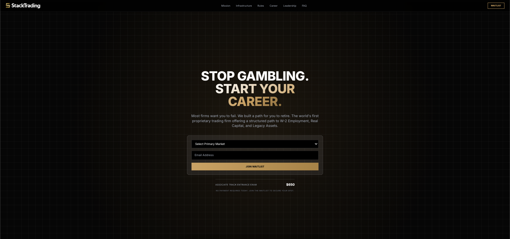
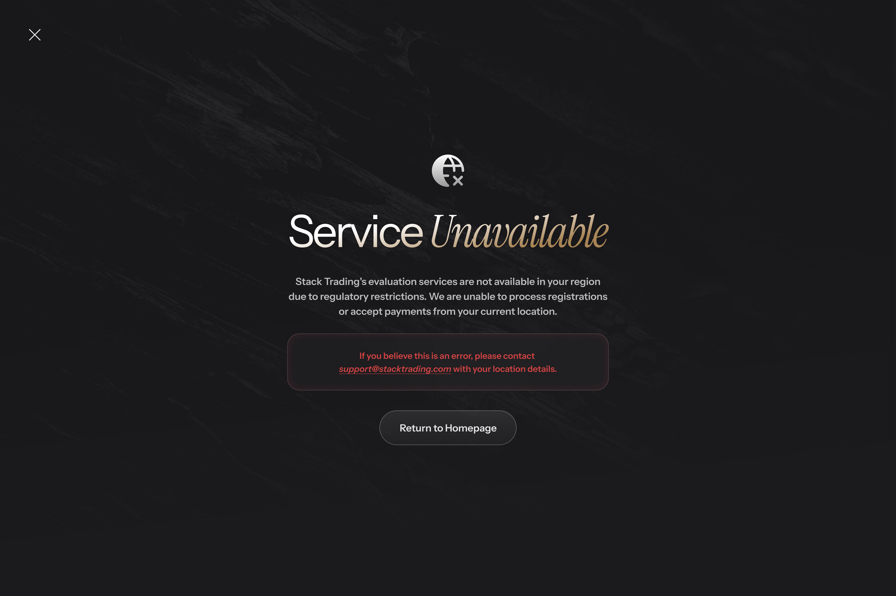
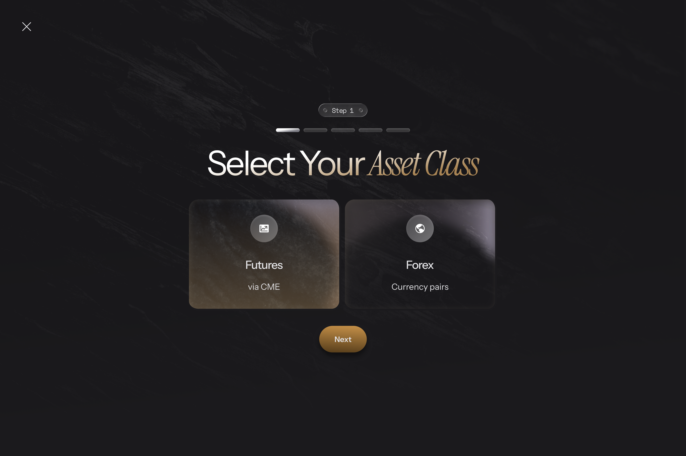
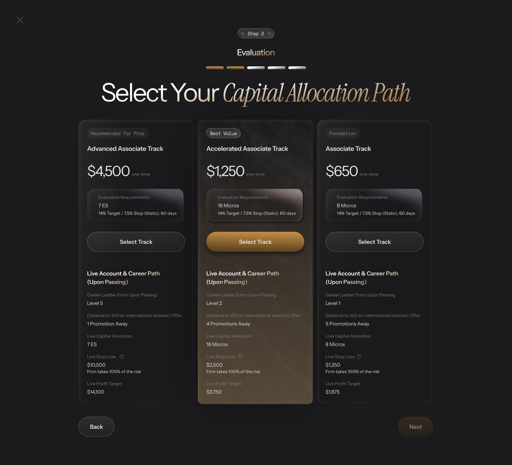
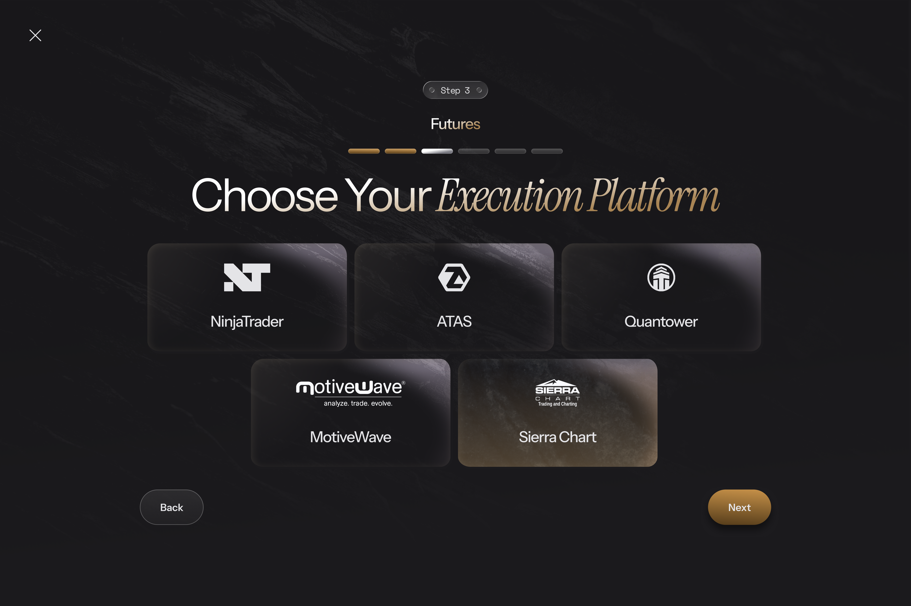
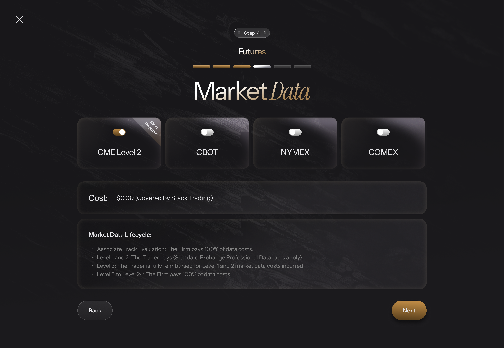
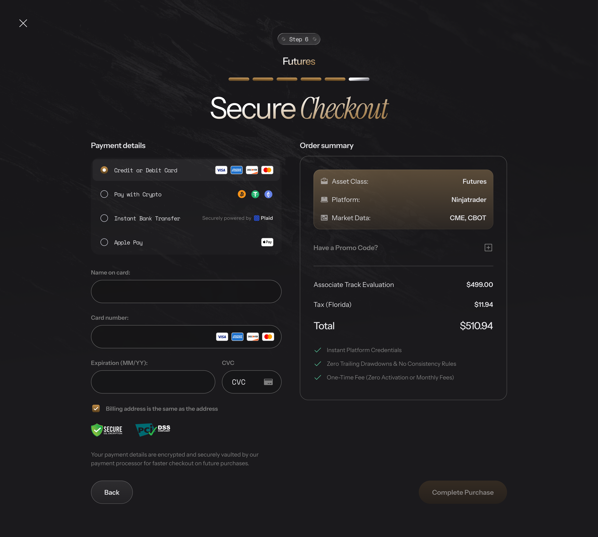
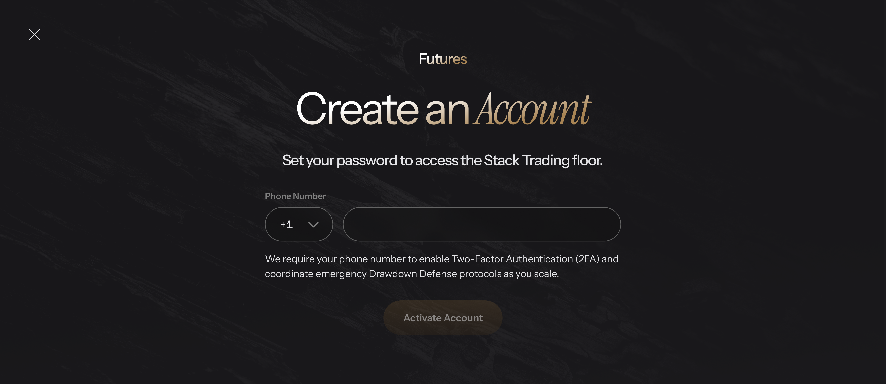
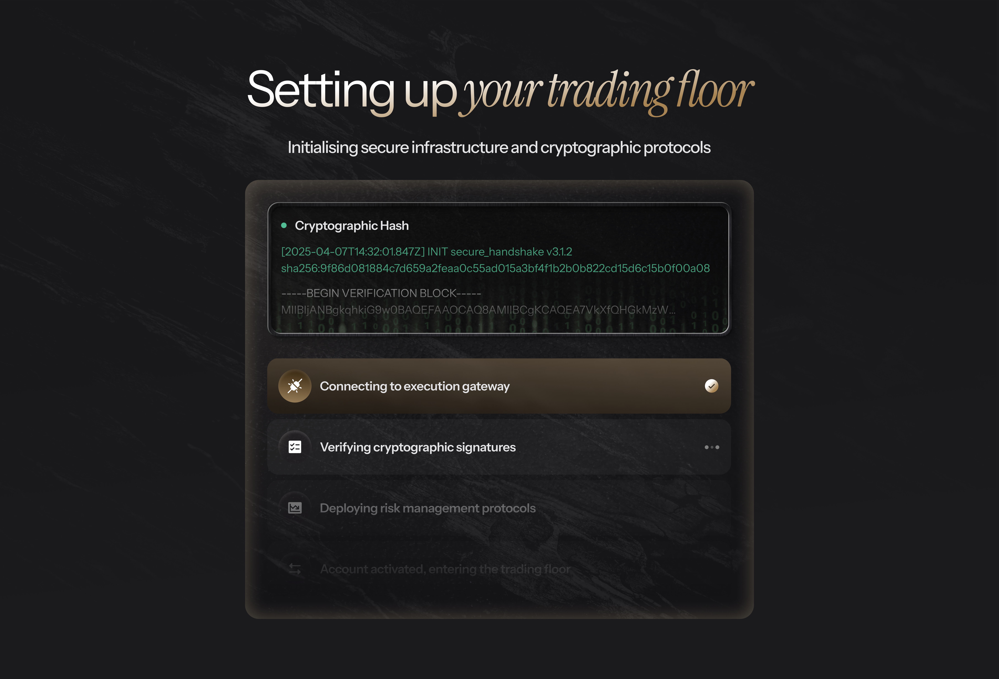

Associate Track Check Out — UC_main_ver_3¶
DOCUMENT CONTROL¶
| Field | Value |
|---|---|
| Version | ver_3 (unified draft for BA review) |
| Scope of this file | Step 0 → Step 7 (UC_1.1 – UC_8.3), all in one unified 9-section layout. |
| Sources | Step 0–4 content: UC_main.md (round 1), re-laid-out and extended with alternative / exception flows. Step 5–7 content: UC_main_ver_2.md. |
| Companion files | common_rules.md (CR) message_catalog.md (MSG) modal_catalog.md (MDL) popup_catalog.md (POP) full_page_state.md (FPS) — all re-issued and aligned with this file. |
| Pending items | PND-01 … PND-22 are kept exactly as flagged in ver_2 (⚠️). PND-23 … PND-30 are new in ver_3, found while unifying Steps 0–4 with Steps 5–7 (table below). |
HOW TO READ THIS FILE¶
- Section numbers are identical in every UC:
1 Overview
2 Trigger
3 Pre-conditions
4 Post-conditions
5 Actors
6 Main Flow
7 Alternative Flows
8 Exception Flows
9 Business Rules & Data Validation. - Section 9 has 2 parts everywhere 9.1 Business Rules (original
BR_xcodes unchanged) and 9.2 Data Validation & Component Rules (the old "Screen Description") — plus an optional 9.3 Reference Data where a UC owns a data snapshot (routing/payload, Table J, package data, platform registry). AF-x= Alternative Flow,EX-x= Exception Flow (unique inside each UC). Cross-reference format:UC_8.1 §8 EX-6.- Codes
CR-xx,MSG-xx,POP-xx,MDL-xx,FPS-xxare defined in the companion catalog files; full message text is not repeated here. - ⚠️
PND-xx= an open point. - Mermaid diagrams are kept for UCs with real branching (UC_1.1, UC_1.3, UC_4, UC_6.1, UC_7.5, UC_8.2, UC_8.3). Other flows are fully described by numbered steps. Original diagrams remain in
UC_main.md. - Step numbering: "Step N" is the user-facing screen step (progress bar). UC numbers are offset (UC_2 = Step 1 … UC_8.x = Step 7). Progress bar: Futures 7 steps, Forex 6 steps (
BR_2.3).
NEW PENDING ITEMS IN ver_3¶
| ID | Topic | Where it shows up |
|---|---|---|
| PND-23 | Refresh behaviour conflict: BR_2.2 (localStorage keeps cart) vs CR-07 / UC_6.1 AF-6 ("lost on full refresh") vs BR_1.1.1 (refresh re-hydrates state) vs UC_7.1 AF-4 |
UC_1.1, UC_2 |
| PND-24 | Gate 2 spec conflicts: HTTP 403 vs JSON geo_blocked; "sole content, no link" vs return-to-homepage button |
UC_1.4 |
| PND-25 | Compliance flow is chosen by geo-IP, but Step 5 collects a billing country that can differ (and Flow F block is IP-based while Step 5 pre-check is billing-based) | UC_1.2, UC_1.4 |
| PND-26 | Flow D (Quebec, French): no French strings in the message catalog; language rule for other flows (catalog has EN/VN only) | UC_1.2 |
| PND-27 | addon_ids[] / platform when the user toggles Forex ↔ Futures after having filled later steps |
UC_2, UC_5 |
| PND-28 | Empty / error handling diverges: Step 3 empty list = dismissible popup with no defined next action; Step 4 empty list = full-page error | UC_4, UC_5 |
| PND-29 | Price drift between Step 2 display and Step 5 /calculate-cart (Founder sold out) is silent until Step 6 |
UC_1.5, UC_6.1 |
| PND-30 | Promo state when the user goes Back (to Step 5 or Step 2) after applying a code; Step 5 re-fires /calculate-cart with promo_code = NULL |
UC_6.1, UC_7.1, UC_7.5, UC_3 |
PND-20is not referenced anywhere in ver_2; it is kept reserved.
TABLE OF CONTENTS¶
| Step | Use Cases | Description |
|---|---|---|
| Step 0 | UC_1.1 – UC_1.5 | System Initialization & Access Gates |
| Step 1 | UC_2 | Asset Class Selection |
| Step 2 | UC_3 | Capital Allocation Selection |
| Step 3 | UC_4 | Platform Selection |
| Step 4 | UC_5 | Market Data Selection (Futures only) |
| Step 5 | UC_6.1 – UC_6.2 | PII Capture, Compliance & Cart Abandonment |
| Step 6 | UC_7.1 – UC_7.5 | Checkout & Payment |
| Step 7 | UC_8.1 – UC_8.3 | Order Processing & Provisioning |
| Appendix | A | Session State Map (cross-step consistency) |
| Appendix | B | CHANGE LOG — ver_3 vs UC_main / ver_2 |
STEP 0 — SYSTEM INITIALIZATION & ACCESS GATES¶
UC_1.1 — System Status API¶
1. OVERVIEW (Mô tả tổng quan)¶
| Field | Content |
|---|---|
| Use Case ID | UC_1.1 |
| Use Case Name | System Status API |
| Description | This use case allows the System to retrieve, in a single call, all geo-routing, pricing, cohort, and payment-method configuration needed to render the entire checkout flow, in order to avoid repeated API calls and centralize checkout state. |
| List Screen | None — background call with no screen of its own. Its result decides which screen the user actually sees: Step 1 (UC_2), the Waitlist page (UC_1.3), or the region-block page (UC_1.4). Checkout page is a dedicated route with no Marketing Header/Footer, except on the Gate 1 redirect. |
| Related UC | UC_1.2 (flow variants), UC_1.3 (Gate 1), UC_1.4 (Gate 2), UC_1.5 (pricing), UC_2 (first screen), UC_7.1 (reads methods[]) |
2. TRIGGER (Sự kiện kích hoạt)¶
User navigates to the dedicated checkout page URL (page load). A full page refresh triggers it again (BR_1.1.1).
3. PRE-CONDITIONS (Điều kiện tiên quyết)¶
- User is on the checkout page.
- No
GET /system/statusresponse exists yet for the current page load.
4. POST-CONDITIONS (Trạng thái sau hoàn thành)¶
- Full response payload is stored in global checkout state (
BR_1.1.2). - Gate 1 (Waitlist) and Gate 2 (Geoblock) conditions are evaluated immediately.
- Exactly one of three outcomes: Step 1 rendered · redirect to Waitlist · region-block page.
5. ACTORS (Tác nhân tham gia)¶
User (implicit — triggers via page load) · System (FE + BE) · Cloudflare (geo-IP headers CF-IPCountry / CF-Region)
6. MAIN FLOW / HAPPY PATH (Luồng xử lý chính)¶
- User navigates to the checkout page.
- FE calls
GET /system/status. Cloudflare headersCF-IPCountry/CF-Regionare auto-included. - Backend processes in this fixed order: 3a Geo-IP Gate → 3b Waitlist Gate → 3c UI Routing → 3d Gateway Filtering & Localization → 3e Cohort & Pricing → 3f Launch Phase & Pass Rate.
- Backend returns JSON — unless it early-returns at 3a (Geo-IP) or 3b (Waitlist), in which case steps after the gate are skipped.
- FE stores the full response in global checkout state and renders Step 1 (UC_2).
flowchart TD
A([Navigate to Checkout URL]) --> B[GET /system/status]
B --> C{3a Geo-IP Gate<br/>match Compliance_geo_restrictions?}
C -- Yes --> D[HTTP 403, geo_blocked=true<br/>skip 3b-3f] --> M[UC_1.4 region-block page FPS-01]
C -- No --> E{3b Waitlist Gate<br/>Allow_New_Signups?}
E -- FALSE --> F[Return payload<br/>skip 3c-3f] --> N[UC_1.3 redirect to Waitlist]
E -- TRUE --> G[3c UI Routing: checkout_ui_routing]
G --> H[3d Gateway Filtering: Payment_Method_Config]
H --> I[3e Cohort and Pricing: Table C + Table J]
I --> J[3f Launch Phase and Pass Rate: Platform_Configuration]
J --> K[Return full JSON payload] --> L[Store in global state] --> O([Render Step 1 - UC_2])
B -. network error / timeout .-> X1[MSG-01 toast, UI not rendered]
B -. HTTP 5xx .-> X2[FPS-02 / MSG-02]7. ALTERNATIVE FLOWS (Luồng phụ / Luồng thay thế)¶
| ID | Condition | Behaviour |
|---|---|---|
| AF-1 | Geo-IP matches Compliance_geo_restrictions |
Backend early-returns (geo_blocked = true, HTTP 403); FE renders UC_1.4. Steps 3b–3f are skipped. |
| AF-2 | Global_Var_Allow_New_Signups == FALSE (and Geo-IP not matched) |
Backend early-returns the payload; FE redirects client-side, same tab, to the Waitlist page (UC_1.3). |
| AF-3 | Both gates would apply (blocked region and signups paused) | Geo-IP Gate runs first (fixed order, BR_1.1.3), so the user sees the region-block page, not the Waitlist. |
| AF-4 | User navigates between Steps 1–5 | No new call; all steps read cached state (BR_1.1.1, BR_1.1.2). |
| AF-5 | Full page refresh on any step | A new GET /system/status re-hydrates global state. What happens to the user's previous selections is ⚠️ PND-23. |
8. EXCEPTION FLOWS (Luồng ngoại lệ / Xử lý lỗi)¶
| ID | Scenario | Handling | Message |
|---|---|---|---|
| EX-1 | Network error / timeout on GET /system/status |
Checkout UI is not rendered; toast only. Retry mechanism and timeout threshold are not defined (see Q-E01). |
MSG-01 |
| EX-2 | HTTP 5xx | Full-page error FPS-02. |
MSG-02 |
| EX-3 | Geo headers missing / empty / "XX" |
Fail-open: defaults to geo_country = 'US', required_flow = 'FLOW_A'; user is not blocked (BR_1.1.4). Legal exposure of this default: Q-E02. |
— |
| EX-4 | checkout_ui_routing returns 0 rows |
Fail-open: defaults to FLOW_A; user is not blocked (BR_1.1.4). |
— |
HTTP 403 is not an error state — it is the intended Gate 2 signal (AF-1 → UC_1.4).
9. BUSINESS RULES & DATA VALIDATION (Quy tắc nghiệp vụ & Ràng buộc dữ liệu)¶
9.1 Business Rules¶
| # | BR Code | Function | Description |
|---|---|---|---|
| 1 | BR_1.1.1 | Single Call Per Page Load | GET /system/status is called exactly once per checkout page load. Step navigation (Steps 1–5) does NOT trigger a new call. A full page refresh triggers a new call to re-hydrate global state. |
| 2 | BR_1.1.2 | Response Persistence | Full API response is stored in global checkout state. All subsequent steps read from cached state — no re-fetching. |
| 3 | BR_1.1.3 | Gate Order & Short-Circuit | Backend order is fixed: Geo-IP → Waitlist → UI Routing → Gateway Filtering → Cohort & Pricing → Launch Phase. A hit at Geo-IP or Waitlist stops all later steps. (Formalised from the Basic Flow; no new behaviour.) |
| 4 | BR_1.1.4 | Fail-Open Defaults for Geo / Routing | Missing geo headers or missing routing rows never block the user — they fall back to US / Flow A. Only a positive match on Compliance_geo_restrictions blocks. (Formalised from original exceptions E3/E4.) |
9.2 Data Validation & Component Rules¶
N/A — no screen component.
9.3 Reference Data — State payload¶
Fields the rest of the flow reads from the cached response. Field names are those used across the spec; the exact response schema is not documented in the source (⚠️ PND-21).
| Field | Set at backend step | Consumed by |
|---|---|---|
Global_Var_Allow_New_Signups |
3b | UC_1.3 (redirect), UC_2 pre-condition |
geo_blocked |
3a | UC_1.4 |
geo_country (default 'US') |
3c | UC_1.2 |
required_flow (e.g. FLOW_A) |
3c | UC_1.2, UC_6.1 |
methods[] |
3d | UC_7.1 |
zip_requirements (map country → bool) |
not stated in source | UC_6.1 |
is_founder_cohort, pricing_tiers |
3e | UC_1.5, UC_3 |
is_launch_phase, historical_pass_rate |
3f | UC_1.2 (pass-rate disclosure) |
📝 BA NOTE — Sections to add on rework (10–14)¶
- §10 API Contracts: full
GET /system/statusresponse schema (including 403 body and the early-return shape at the Waitlist gate),zip_requirementsandmethods[]structures → PND-21. - §11 Regional Compliance Matrix: see UC_1.2 — PND-22.
- §12 State Machine: page-load states — Loading → Gate 2 / Gate 1 / Ready / Error.
- §13 Security/Privacy: reliance on
CF-IPCountry(spoofable via VPN), fail-open policy (Q-E02). - §14 UI/UX: loading state while the call is in flight (not defined).
UC_1.2 — Geo-Based Compliance UI Variants (Flow A–G)¶
1. OVERVIEW (Mô tả tổng quan)¶
| Field | Content |
|---|---|
| Use Case ID | UC_1.2 |
| Use Case Name | Geo-Based Compliance UI Variants (Flow A–G) |
| Description | This use case allows the System to render the correct region-specific compliance disclosures and checkboxes at Step 5, in order to satisfy local regulatory requirements without manual per-country customization by developers. |
| List Screen | Step 5 (PII & Compliance) — 7 flow-specific wireframe variants |
| Related UC | UC_1.1 (source of required_flow), UC_1.4 (Flow F), UC_6.1 (host screen) |
2. TRIGGER (Sự kiện kích hoạt)¶
Step 5 renders.
3. PRE-CONDITIONS (Điều kiện tiên quyết)¶
required_flow is stored in global checkout state (from Step 0).
4. POST-CONDITIONS (Trạng thái sau hoàn thành)¶
The correct flow-specific compliance content (disclosures + checkboxes) is displayed.
5. ACTORS (Tác nhân tham gia)¶
System
6. MAIN FLOW / HAPPY PATH (Luồng xử lý chính)¶
- Step 5 mounts.
- FE reads
required_flowfrom state. - FE renders the matching hardcoded UI variant per the routing table below.
Flow routing table
| Flow | Countries / Regions | UI Behavior at Step 5 |
|---|---|---|
| A | USA + all unmatched (default) | 2 standard checkboxes only |
| B | UK, Australia | 2 checkboxes + pass-rate disclosure (varies by is_launch_phase) |
| C | EU/EEA (29 countries) | 2 checkboxes + pass-rate disclosure + 1 EU 14-day waiver checkbox (3 total) |
| D | Canada — Quebec only | Entire checkout UI (Steps 1–7) in French, incl. all labels/errors/toasts. Standard 2 checkboxes |
| E | UAE | 2 checkboxes + DFSA/ADGM non-regulation disclaimer |
| F | Sanctioned countries | Hard block — Gate 2 (UC_1.4). Step 5 never reached |
| G | India | 2 standard checkboxes only |
⚠️ PND-22: the matrix lacks Flow H/I/J and lists Belgium/Bulgaria as both blocked and Flow C.
7. ALTERNATIVE FLOWS (Luồng phụ / Luồng thay thế)¶
| ID | Condition | Behaviour |
|---|---|---|
| AF-1 | Flow B or C, is_launch_phase = TRUE |
Pass-rate disclosure shows the "newly launched program — data unavailable" text (see §9.2 row 4). |
| AF-2 | Flow B or C, is_launch_phase = FALSE |
Disclosure shows [historical_pass_rate]% text. Same wording for UK and Australia. |
| AF-3 | Flow C | A 3rd required checkbox (EU 14-day withdrawal waiver) appears between the standard checkboxes and [Next]. |
| AF-4 | Flow D (Quebec) | All of Steps 1–7 render in French — not only Step 5. ⚠️ PND-26 (French strings not in the message catalog). |
| AF-5 | Flow E (UAE) | DFSA/ADGM disclaimer shown above the standard checkboxes. |
| AF-6 | Flow G (India) | Same checkboxes as Flow A. Payment-method list is stripped separately at Step 0 (BR_7.1.2, ⚠️ PND-18). |
| AF-7 | Flow F | Never reaches Step 5 through Gate 2. Note: Step 5 has its own billing-country sanctions pre-check (CR-09, UC_6.1) — the two mechanisms are independent. ⚠️ PND-25 (flow is chosen by IP, not by billing country). |
| AF-8 | Country matches no routing row | Backend defaults to Flow A (UC_1.1 EX-4). |
| AF-9 | Click "Terms of Service" in checkbox 2 | Opens MDL-01; no navigation, no form reset; closing preserves all form state. |
8. EXCEPTION FLOWS (Luồng ngoại lệ / Xử lý lỗi)¶
| ID | Scenario | Handling | Message |
|---|---|---|---|
| EX-1 | Routing itself has no failure state | Unmatched country → Flow A at backend level (UC_1.1). | — |
| EX-2 | required_flow value outside the FE enum (Ops adds a flow in DB without an FE deploy) |
Not defined (BR_1.2.1: FE mapping is hardcoded). See Q-E06. |
— |
9. BUSINESS RULES & DATA VALIDATION (Quy tắc nghiệp vụ & Ràng buộc dữ liệu)¶
9.1 Business Rules¶
| # | BR Code | Function | Description |
|---|---|---|---|
| 1 | BR_1.2.1 | Flow-to-UI Mapping is Frontend-Hardcoded | required_flow → UI content is a fixed enum switch in FE. Changing content requires an FE code change. |
| 2 | BR_1.2.2 | Country-to-Flow Assignment is Dynamic (DB-Driven) | Which country maps to which flow lives in the checkout_ui_routing PostgreSQL table — Ops-configurable without a code deploy. |
9.2 Data Validation & Component Rules¶
Flow A: Global Default UI

| # | Component | Type | Req. | Displaying / Behaviour | Validation |
|---|---|---|---|---|---|
| 1 | Checkbox 1 — Commercial Acknowledgment | Checkbox | Yes | Confirms the user is buying a skills-assessment evaluation, not opening a brokerage account. Default unchecked; all flows except F. Exact text: "I acknowledge that I am purchasing a skills assessment software evaluation for commercial purposes to secure an independent contractor agreement with a US-domiciled C-Corporation, and I am not opening a retail financial, brokerage, or investment account." | Must be checked before [Next] enables. |
| 2 | Checkbox 2 — Age & ToS | Checkbox | Yes | Confirms age ≥ 18 and ToS agreement. Default unchecked. Text: "By clicking 'Complete Purchase', I confirm that I am at least 18 years of age and agree to the Terms of Service for the Data Processing and Performance Evaluation Service (Associate Track)." "Terms of Service" is a hyperlink → MDL-01 (same content as public /terms); does not navigate away or reset checkout. Wording vs. actual button labels: Q-E18. |
Must be checked before [Next] enables. |
| 3 | Checkbox 3 — EU Withdrawal Waiver (Flow C only) | Checkbox | Yes (Flow C) | Rendered only for Flow C. Default unchecked. Text: "I expressly consent to the immediate commencement of the digital evaluation service and waive my 14-day right of withdrawal under EU consumer protection law." Positioned between standard checkboxes and [Next]. | Must be checked before [Next] enables (Flow C only). |
| 4 | Pass-Rate Disclosure (Flow B, C) | Static Text | N/A | Above standard checkboxes. If is_launch_phase = TRUE: "This is a newly launched proprietary trading evaluation program. Historical pass-rate and success data is currently unavailable." Else: "Historically, only [historical_pass_rate]% of participants successfully pass the evaluation to become authorized traders." Same text for UK & Australia. |
N/A |
| 5 | UAE Disclaimer (Flow E) | Static Text | N/A | Above standard checkboxes, Flow E only. Text: "Stack Trading is a U.S.-domiciled entity and is not licensed, registered, or regulated by the Dubai Financial Services Authority (DFSA) or the Abu Dhabi Global Market (ADGM)." | N/A |
| 6 | Hypothetical Performance Disclaimer (all flows) | Static Text | N/A | Mandatory legal disclaimer on simulated performance. Always visible, non-collapsible, all flows. Full CFTC-style disclaimer text. No interaction. | N/A |
📝 BA NOTE — Sections to add on rework (10–14)¶
- §11 Regional Compliance Matrix (priority): single matrix Country/Region → Flow → disclosures → checkbox count → language → blocked (PND-22, PND-25, PND-26).
- §13 Legal: the flow is decided by geo-IP; confirm that legal accepts IP-based flow selection for EU/UK/Quebec purchasers with a different billing country (PND-25).
- §14 UI/UX: French strings for Flow D across all 7 steps; checkbox layout on mobile.
UC_1.3 — Gate 1: Waitlist¶
1. OVERVIEW (Mô tả tổng quan)¶
| Field | Content |
|---|---|
| Use Case ID | UC_1.3 |
| Use Case Name | Gate 1 — Waitlist |
| Description | This use case allows the User to join a waitlist when new signups are paused, in order to be notified and retain their place once enrollment reopens. |
| List Screen | Waitlist Page (Marketing Header/Footer rendered) |
| Related UC | UC_1.1 (trigger) |
2. TRIGGER (Sự kiện kích hoạt)¶
GET /system/status returns Global_Var_Allow_New_Signups == FALSE (and the user is not geo-blocked).
3. PRE-CONDITIONS (Điều kiện tiên quyết)¶
User is on the checkout page; UC_1.1 completed with the flag FALSE.
4. POST-CONDITIONS (Trạng thái sau hoàn thành)¶
- Direct API calls fired to both Klaviyo and ActiveCampaign with email + UTM.
- Page shows the success state (
MSG-03).
5. ACTORS (Tác nhân tham gia)¶
User · ActiveCampaign · Klaviyo
6. MAIN FLOW / HAPPY PATH (Luồng xử lý chính)¶
/system/statusreturns the flag FALSE.- FE redirects (client-side, same tab) to the dedicated Waitlist page.
- User selects Primary Market (
CR-01). - User enters Email (
CR-02). - User clicks [Join Waitlist] — validate all fields; invalid → inline errors, no submit. Button behaviour:
CR-06. - FE reads UTM per
CR-05and calls Klaviyo + ActiveCampaign APIs directly and in parallel. - Both succeed → success state (
MSG-03,POP-04). - User clicks [Return to Homepage] → navigated to the homepage.
flowchart TD
A([Waitlist page]) --> B[Select Primary Market]
B --> C[Enter Email]
C --> D[Click Join Waitlist]
D --> E[Button Processing - CR-06, read UTM - CR-05]
E --> F[Klaviyo + ActiveCampaign in parallel]
F --> G{Both succeed?}
G -- Yes --> H[MSG-03 success] --> I([Return to Homepage])
G -- No --> J[MSG-04 banner, button re-enabled, form kept] --> D7. ALTERNATIVE FLOWS (Luồng phụ / Luồng thay thế)¶
| ID | Condition | Behaviour |
|---|---|---|
| AF-1 | Email already exists in the CRM | CRM silently dedupes/updates; the user sees the normal success state — no "already registered" signal (BR_1.3.3). |
| AF-2 | Flag flips to FALSE while the user is mid-checkout | User completes the entire flow uninterrupted; FE does not re-check (BR_1.3.2). Backend enforcement at payment: Q-E04. |
| AF-3 | Retry after failure | Safe to resubmit — CRM-side dedupe absorbs a call that already succeeded on one of the two systems (BR_1.3.3). |
| AF-4 | Flag is FALSE for the whole platform | Applies to ALL countries at once (BR_1.3.1). Blocked regions still see UC_1.4 first (UC_1.1 AF-3). |
8. EXCEPTION FLOWS (Luồng ngoại lệ / Xử lý lỗi)¶
| ID | Scenario | Handling | Message |
|---|---|---|---|
| EX-1 | One or both CRM calls fail | Treated as a failure: button reverts to "Join Waitlist" (enabled); form data NOT cleared; user may retry. | MSG-04 (banner) |
| EX-2 | Primary Market empty / Email invalid on submit | Inline errors; no API call (CR-01, CR-02, CR-03). |
— |
| EX-3 | Client-side calls blocked (ad-blocker) or CRM key issues | Same as EX-1 from the user's view. See Q-E05. |
MSG-04 |
9. BUSINESS RULES & DATA VALIDATION (Quy tắc nghiệp vụ & Ràng buộc dữ liệu)¶
9.1 Business Rules¶
| # | BR Code | Function | Description |
|---|---|---|---|
| 1 | BR_1.3.1 | Global Scope | Global_Var_Allow_New_Signups == FALSE is a global toggle — redirects ALL countries simultaneously. |
| 2 | BR_1.3.2 | No Interrupt Logic | If the flag changes to FALSE mid-checkout (user started when TRUE), the user completes the ENTIRE flow uninterrupted. FE does not re-check after the initial load. |
| 3 | BR_1.3.3 | CRM-Side Deduplication (No Info Leakage) | No custom backend dedup check exists. Klaviyo/ActiveCampaign resolve identity natively; an existing email is silently deduped/updated so nothing reveals whether an email is registered. Same intent as CR-12, applied to a 3rd-party CRM. |
9.2 Data Validation & Component Rules¶
Waitlist UI

| # | Component | Type | Req. | Displaying / Behaviour | Validation |
|---|---|---|---|---|---|
| 1 | Primary Market | Dropdown (single) | Yes | CR-01. Placeholder "Select primary market". Options: Futures, Forex, Crypto. |
Required — inline error if empty on submit. |
| 2 | Textbox | Yes | Captures lead email for CRM. | CR-02 |
|
| 3 | [Join Waitlist] | Button (Primary) | N/A | CR-06. Valid → "Processing..." → parallel Klaviyo + ActiveCampaign calls with email + UTM (CR-05). CRM fail → reverts to enabled + MSG-04. |
All fields valid |
| 4 | Success state | Popup | N/A | MSG-03 (POP-04). Contains [Return to Homepage]. |
N/A |
📝 BA NOTE — Sections to add on rework (10–14)¶
- §10 API Contracts: Klaviyo / ActiveCampaign payloads, list IDs, how
Primary Marketmaps to CRM fields. - §13 Security/Privacy: direct client-side CRM calls (key exposure, ad-blockers —
Q-E05), consent for marketing emails per region. - §14 UI/UX: success popup vs. inline state;
Cryptooption exists on the Waitlist but not in checkout asset classes.
UC_1.4 — Gate 2: Geoblock (Flow F)¶
1. OVERVIEW (Mô tả tổng quan)¶
| Field | Content |
|---|---|
| Use Case ID | UC_1.4 |
| Use Case Name | Gate 2 — Geoblock (Flow F) |
| Description | This use case allows the System to hard-block a user from a sanctioned jurisdiction, in order to comply with OFAC/FATF regulatory requirements. |
| List Screen | Gate 2 — Geoblock (full-page, FPS-01) |
| Related UC | UC_1.1 (Geo-IP Gate, activity flow), UC_1.2 (Flow F), UC_6.1 (separate billing-country pre-check) |
2. TRIGGER (Sự kiện kích hoạt)¶
GET /system/status returns HTTP 403 (geo_blocked == true; CF-IPCountry / CF-Region matches Compliance_geo_restrictions).
3. PRE-CONDITIONS (Điều kiện tiên quyết)¶
None.
4. POST-CONDITIONS (Trạng thái sau hoàn thành)¶
The entire checkout UI is replaced by the hard-stop block page (FPS-01). The user cannot proceed.
5. ACTORS (Tác nhân tham gia)¶
System · Cloudflare
6. MAIN FLOW / HAPPY PATH (Luồng xử lý chính)¶
/system/statusreturns HTTP 403.- FE renders the full-page block (
FPS-01,MSG-05) replacing the entire checkout UI — no header / nav / footer / step indicators / appeal link.
Activity flow: see UC_1.1 §6 diagram, branch "3a Geo-IP Gate → Yes".
7. ALTERNATIVE FLOWS (Luồng phụ / Luồng thay thế)¶
| ID | Condition | Behaviour |
|---|---|---|
| AF-1 | User passes Gate 2 (IP allowed) but later selects a blocked Country/Region at Step 5 | Not handled here — Step 5 shows inline MSG-10 via its own pre-check (CR-09, UC_6.1 EX-1/EX-2). Independent mechanisms. ⚠️ PND-25 |
| AF-2 | User blocked while signups are also paused | Gate 2 wins over Waitlist (UC_1.1 AF-3). |
8. EXCEPTION FLOWS (Luồng ngoại lệ / Xử lý lỗi)¶
| ID | Scenario | Handling | Message |
|---|---|---|---|
| EX-1 | None — page is a dead end | No retry, no appeal link. Contact route is only the support email inside the message text. | MSG-05 |
9. BUSINESS RULES & DATA VALIDATION (Quy tắc nghiệp vụ & Ràng buộc dữ liệu)¶
9.1 Business Rules¶
| # | BR Code | Function | Description |
|---|---|---|---|
| 1 | BR_1.4.1 | Hard Stop — Full Page Replacement | HTTP 403 = absolute hard stop. The geoblock state replaces the ENTIRE checkout UI; only the block message is shown. |
9.2 Data Validation & Component Rules¶
Flow F: Geo-Block

| # | Component | Type | Req. | Displaying / Behaviour |
|---|---|---|---|---|
| 1 | Full-page block message (FPS-01) |
Static Text | N/A | Text MSG-05. Sole content of the page — no header, nav, footer, step indicator or appeal link. Page is a dead end. |
| 2 | Return to homepage | Button | N/A | Listed in the source, but conflicts with "sole content" above. ⚠️ PND-24 |
⚠️ PND-24: the source describes Gate 2 both as "HTTP 403" (this UC) and as a JSON response with geo_blocked = true (UC_1.1 activity flow); and as "sole content, no link" vs. a return-to-homepage button.
📝 BA NOTE — Sections to add on rework (10–14)¶
- §10 API Contracts: 403 response body shape (PND-24).
- §11 Regional: the sanctioned-country list and its owner (
Compliance_geo_restrictions); OFAC/FATF review cycle. - §13 Security/Privacy: VPN / proxy evasion, logging of blocked attempts.
- §14 UI/UX: block page layout, homepage button, mobile view.
UC_1.5 — Pricing Engine¶
1. OVERVIEW (Mô tả tổng quan)¶
| Field | Content |
|---|---|
| Use Case ID | UC_1.5 |
| Use Case Name | Pricing Engine |
| Description | This use case allows the System to dynamically populate the correct price (Standard or Founder) for all 3 Evaluation Package tiers, in order to keep pricing centrally managed in Zapier Table J without requiring a code deploy for price changes. |
| List Screen | Step 2 (Capital Allocation Selection) — no unique screen; output renders inside UC_3's pricing cards |
| Related UC | UC_1.1 (data source), UC_3 (display), UC_6.1 (Pricing Engine at /calculate-cart), UC_8.1 EX-6 (PRICE_CHANGED) |
2. TRIGGER (Sự kiện kích hoạt)¶
Step 2 renders.
3. PRE-CONDITIONS (Điều kiện tiên quyết)¶
is_founder_cohort and pricing_tiers are available in global checkout state (from Step 0, step 3e).
4. POST-CONDITIONS (Trạng thái sau hoàn thành)¶
Correct pricing (Founder or Standard) is displayed on all 3 cards, formatted per CR-04.
5. ACTORS (Tác nhân tham gia)¶
System
6. MAIN FLOW / HAPPY PATH (Luồng xử lý chính)¶
- FE reads
is_founder_cohortfrom state. - TRUE → render Founder Price with the Standard price struck through.
- FALSE → render Standard price + "one-time" label.
Governed entirely by state read at Step 0; no API call at Step 2.
7. ALTERNATIVE FLOWS (Luồng phụ / Luồng thay thế)¶
| ID | Condition | Behaviour |
|---|---|---|
| AF-1 | Founder cohort still open at Step 5 | /calculate-cart Pricing Engine (UC_6.1 step 9.2) prices with Founder Price. |
| AF-2 | Founder cohort sells out between Step 2 view and Step 5 [Next] |
/calculate-cart silently returns the Standard-based totals; nothing is shown at Step 5 (BR_6.1.5) — the change is first visible at Step 6 Order Summary. ⚠️ PND-29 |
| AF-3 | Founder cohort sells out, or tax rate changes, between /calculate-cart and /execute-checkout |
Backend returns PRICE_CHANGED → see EX-1. |
8. EXCEPTION FLOWS (Luồng ngoại lệ / Xử lý lỗi)¶
| ID | Scenario | Handling | Message |
|---|---|---|---|
| EX-1 | Race condition — stale pricing (PRICE_CHANGED at /execute-checkout) |
No charge, no promo reservation. Popup POP-02; [Refresh now] closes the overlay and refreshes the Order Summary — no full page reload (BR_1.5.2). Detailed in UC_8.1 §8 EX-6. |
MSG-06 |
| EX-2 | pricing_tiers missing / incomplete for a tier |
Not defined. See Q-E08. |
— |
9. BUSINESS RULES & DATA VALIDATION (Quy tắc nghiệp vụ & Ràng buộc dữ liệu)¶
9.1 Business Rules¶
| # | BR Code | Function | Description |
|---|---|---|---|
| 1 | BR_1.5.1 | Founder Cohort Detection | is_founder_cohort = TRUE → Founder Price column (Table J). FALSE → Challenge (Standard) Price column. Prices never hardcoded in FE — always read from pricing_tiers. Format: CR-04. |
| 2 | BR_1.5.2 | Race Condition — Stale Pricing | Triggered at the Step 6 pay click when the server-side re-check detects Founder cohort sold out (reverts to Standard) OR a changed tax rate since /calculate-cart. Returns PRICE_CHANGED — no charge, no promo reservation. MSG-06 shown; [Refresh now] closes overlay + refreshes Order Summary, no full reload. |
| 3 | BR_1.5.3 | Price Data Source | Founder/Standard prices for all 3 tiers live in Zapier Table J. Backend packs them into pricing_tiers at step 3e of /system/status. No additional API call at Step 2. |
9.2 Data Validation & Component Rules¶
N/A — no unique screen component (see UC_3 §9.2).
9.3 Reference Data — Table J snapshot¶
Ops-editable; source of truth = Zapier, not this document. All values follow CR-04.
| Track | Challenge Price | Futures Reset | Forex Reset | Extension Fee | Founder Price | Founder Reset Fee |
|---|---|---|---|---|---|---|
| Associate (L1) | $650 | $375 | $325 | $150 | $499 | $325 |
| Accelerated (L2) | $1,250 | $725 | $625 | $275 | $1,049 | $600 |
| Advanced (L5) | $7,000 | $3,800 | $3,500 | $1,500 | $5,599 | $3,250 |
📝 BA NOTE — Sections to add on rework (10–14)¶
- §10 API Contracts:
pricing_tiersschema;PRICE_CHANGEDerror body. - §12 State Machine: Founder cohort — Open → Sold-out; how many seats remain and whether a seat is held during checkout (not stated).
- §14 UI/UX: strikethrough / Founder price layout; price-change popup wording (
MSG-06).
STEP 1 — ASSET CLASS SELECTION¶
UC_2 — Asset Class Selection¶
1. OVERVIEW (Mô tả tổng quan)¶
| Field | Content |
|---|---|
| Use Case ID | UC_2 |
| Use Case Name | Step 1: Asset Class Selection |
| Description | This use case allows the User to select their preferred trading asset class (Futures or Forex), in order to determine the subsequent step count and platform/risk configuration used throughout checkout. |
| List Screen | Step 1 (Asset Class Selection) |
| Related UC | UC_1.1 (gates), UC_3 (next), UC_4 (platform depends on asset class), UC_5 (Futures only) |
2. TRIGGER (Sự kiện kích hoạt)¶
User passes Gate 1 and Gate 2 at Step 0.
3. PRE-CONDITIONS (Điều kiện tiên quyết)¶
Global_Var_Allow_New_Signups == TRUE;geo_blocked == FALSE./system/statusresponse stored in state.
4. POST-CONDITIONS (Trạng thái sau hoàn thành)¶
asset_class stored in session state; progress bar reflects 7 (Futures) or 6 (Forex) steps; user proceeds to Step 2.
5. ACTORS (Tác nhân tham gia)¶
User
6. MAIN FLOW / HAPPY PATH (Luồng xử lý chính)¶
- Step 1 renders 2 cards: Futures, Forex. None selected.
- User clicks one card →
asset_classstored; progress bar set (Futures 7 / Forex 6). - User clicks [Next] → Step 2 (UC_3). Persistence:
CR-07.
7. ALTERNATIVE FLOWS (Luồng phụ / Luồng thay thế)¶
| ID | Condition | Behaviour |
|---|---|---|
| AF-1 | User switches Forex → Futures (initial or via back-navigation) | Step 3 platform selection resets; Step 4 (Market Data) re-added; bar → 7 steps. What happens to earlier addon_ids[] selections: ⚠️ PND-27. |
| AF-2 | User switches Futures → Forex | Step 3 platform selection resets; Step 4 removed from flow; bar → 6 steps; addon_ids[] = [] on the Forex path (UC_6.1 pre-condition). |
| AF-3 | User changes asset class after filling Step 5 | Step 5 data is not reset (BR_2.3). Step 2 package selection is also unaffected. |
| AF-4 | Page refresh on Step 1 | Behaviour conflicts across the spec. ⚠️ PND-23 |
| AF-5 | User re-clicks the already-selected card | Selection unchanged; no reset (radio behaviour). |
8. EXCEPTION FLOWS (Luồng ngoại lệ / Xử lý lỗi)¶
| ID | Scenario | Handling | Message |
|---|---|---|---|
| EX-1 | None — options are hardcoded in FE, always displayed | N/A | — |
| EX-2 | Deep-link to a later step / browser Back button | Not defined. See Q-E07. |
— |
9. BUSINESS RULES & DATA VALIDATION (Quy tắc nghiệp vụ & Ràng buộc dữ liệu)¶
9.1 Business Rules¶
| # | BR Code | Function | Description |
|---|---|---|---|
| 1 | BR_2.1 | Fixed Options | 2 options (Futures, Forex) hardcoded in FE — not API-driven. Both always displayed. |
| 2 | BR_2.2 | Session Persistence | Ref CR-07. Selection is kept in session state for the duration of checkout. The source also says "refresh does NOT return user to Step 1 if local storage cart state is present" — conflicts with CR-07 ("lost on refresh") → ⚠️ PND-23. |
| 3 | BR_2.3 | Asset Class Change — Progress Bar & Step Count Impact | Futures: 7 steps (1→2→3→4→5→6→7). Forex: 6 steps (1→2→3→5→6→7, Step 4 omitted). Applies on initial selection AND on back-navigation. Futures→Forex: Step 3 reset, Step 4 removed, bar → 6. Forex→Futures: Step 3 reset, Step 4 added back, bar → 7. Step 3 reset is the deliberate exception to CR-07; Step 5 data is NOT reset (consistent with CR-07) — cleared only on full page refresh. |
9.2 Data Validation & Component Rules¶
Step 1: Asset Class Selection

| # | Component | Type | Req. | Displaying / Behaviour | Validation |
|---|---|---|---|---|---|
| 1 | Futures | Radio Group | Yes | Title "Futures", subtitle "via CME". Default unselected. Click → asset_class = 'FUTURES', deselects Forex. If switching FROM Forex: Step 3 resets, Step 4 re-added, bar → 7. |
N/A |
| 2 | Forex | Radio Group | Yes | Title "Forex", subtitle "Currency pairs". Default unselected. Click → asset_class = 'FOREX', deselects Futures. If switching FROM Futures: Step 3 resets, Step 4 removed, bar → 6. |
N/A |
| 3 | [Next] | Button (Primary) | N/A | Client-side navigation only (no API call, so CR-06 does not apply). Disabled until one asset class is selected; then → Step 2. |
One card selected |
📝 BA NOTE — Sections to add on rework (10–14)¶
- §12 State Machine: session-state map — which keys each step owns and which are reset by which upstream change (asset class, package, platform).
- §14 UI/UX: progress-bar update animation when step count changes 7 ↔ 6; card focus/keyboard behaviour.
STEP 2 — CAPITAL ALLOCATION SELECTION¶
UC_3 — Capital Allocation Selection¶
1. OVERVIEW (Mô tả tổng quan)¶
| Field | Content |
|---|---|
| Use Case ID | UC_3 |
| Use Case Name | Step 2: Capital Allocation Selection |
| Description | This use case allows the User to select one of three Evaluation Package tiers, in order to determine their starting notional capital, evaluation targets, and career-ladder entry point. |
| List Screen | Step 2 (Capital Allocation Selection) |
| Related UC | UC_1.5 (pricing), UC_2 (previous), UC_4 (next), UC_7.5 (promo is bound to product_id) |
2. TRIGGER (Sự kiện kích hoạt)¶
User clicks [Next] at Step 1 with an asset class selected.
3. PRE-CONDITIONS (Điều kiện tiên quyết)¶
asset_classin session state./system/statuspricing data (pricing_tiers,is_founder_cohort) in global checkout state.
4. POST-CONDITIONS (Trạng thái sau hoàn thành)¶
product_id (EVAL_L1 / EVAL_L2 / EVAL_L5) stored in session state; user proceeds to Step 3.
5. ACTORS (Tác nhân tham gia)¶
User
6. MAIN FLOW / HAPPY PATH (Luồng xử lý chính)¶
- Step 2 renders 3 pricing cards left-to-right: Advanced, Accelerated, Associate. No card is pre-selected.
- Prices render per UC_1.5 (Standard, or Founder with strikethrough Standard).
- User clicks a card or its [Select Track] button →
product_idstored, previous card deselected. - User clicks [Next] → Step 3 (UC_4).
Daily Loss Limit(Daily_Loss_Ratio × max_drawdown) is a backend/ops metric — not displayed at Step 2.Daily_Loss_Ratiois read from Table C at runtime but never surfaced here.
7. ALTERNATIVE FLOWS (Luồng phụ / Luồng thay thế)¶
| ID | Condition | Behaviour |
|---|---|---|
| AF-1 | is_founder_cohort = TRUE |
Standard price struck through + Founder price full size; no "one-time" label (BR_3.1). |
| AF-2 | is_founder_cohort = FALSE |
Standard price + "one-time" label. |
| AF-3 | User clicks [Back] | Returns to Step 1; selection kept (CR-07). |
| AF-4 | User comes back and picks a different card | product_id is replaced. Effect on an already-applied promo code: ⚠️ PND-30 (promo is 1-to-1 with product_id, BR_7.5.7). |
| AF-5 | Hover on Live Stop Loss ⓘ | Tooltip explains firm-absorbed risk (see §9.2 row 3). Touch-device equivalent: Q-E09. |
8. EXCEPTION FLOWS (Luồng ngoại lệ / Xử lý lỗi)¶
| ID | Scenario | Handling | Message |
|---|---|---|---|
| EX-1 | None defined — no API call at this step | N/A | — |
| EX-2 | pricing_tiers missing a tier / price null |
Not defined. See Q-E08. |
— |
9. BUSINESS RULES & DATA VALIDATION (Quy tắc nghiệp vụ & Ràng buộc dữ liệu)¶
9.1 Business Rules¶
| # | BR Code | Function | Description |
|---|---|---|---|
| 1 | BR_3.1 | Pricing Mode — Standard vs Founder | is_founder_cohort = TRUE → strikethrough Standard + full-size Founder, no "one-time" label. FALSE → Standard + "one-time" label. Format: CR-04. |
| 2 | BR_3.2 | Card Selection | Only one card selectable at a time; a new selection deselects the previous. [Next] disabled until a card is selected. |
9.2 Data Validation & Component Rules¶
Step 2: Capital Allocation

| # | Component | Type | Req. | Displaying / Behaviour | Validation |
|---|---|---|---|---|---|
| 1 | Pricing Card ×3 — Top | Radio Group | Yes | 3 cards: Advanced · Accelerated · Associate. Each: Status Ribbon, Track name, Price block (CR-04), Evaluation Requirements box, [Select Track]. Requirements row 2 renders "{target}% Target / {stop}% Stop, 60 days" dynamically from Table C. Click anywhere on card OR [Select Track] → selects tier, stores product_id, deselects previous. |
N/A |
| 2 | Pricing Card ×3 — Bottom | Static Display | N/A | Live Account & Career Path preview. Always visible, not collapsible. Header "Live Account & Career Path (Upon Passing)". Fields: Career Ladder Entry, Distance to W2 (1/4/5 Promotions Away), Live Capital Allocation, Live Stop Loss (with "Firm takes 100% of the risk" + tooltip), Live Profit Target. | N/A |
| 3 | Live Stop Loss — Tooltip ⓘ | Tooltip | N/A | On hover: "If you pass the evaluation, the firm backs your account with this exact amount of real capital at risk. We absorb the losses so you can focus on execution." | N/A |
| 4 | [Select Track] | Button (Secondary) | N/A | Per-card; equivalent to clicking the card body. | N/A |
| 5 | [Back] | Button (Secondary) | N/A | → Step 1. Data kept (CR-07). |
N/A |
| 6 | [Next] | Button (Primary) | N/A | Client-side navigation only (CR-06 not applicable — no API call). Disabled until a card is selected; then → Step 3. |
Card selected |
9.3 Reference Data — Evaluation Package¶
All monetary values follow CR-04.
| Parameter | Advanced (EVAL_L5) | Accelerated (EVAL_L2) | Associate (EVAL_L1) |
|---|---|---|---|
| Standard Price | $7,000 | $1,250 | $650 |
| Founder Price | $5,599 | $1,049 | $499 |
| Status Ribbon | Recommended for Pros | Best Value | Foundation |
| Eval Req. — Futures | 7 ES | 16 Micros | 8 Micros |
| Eval Req. — Forex | $150,000 Notional | $50,000 Notional | $25,000 Notional |
| Target/Stop | 14% / 7.5%, 60 days (dynamic %, fixed days) | same | same |
| Career Entry | Level 5 | Level 2 | Level 1 |
| Distance to W2 | 1 Promotion Away | 4 Promotions Away | 5 Promotions Away |
| Live Stop Loss | $10,500 | $2,500 | $1,250 |
| Live Profit Target | $14,100 | $3,750 | $1,875 |
📝 BA NOTE — Sections to add on rework (10–14)¶
- §10 API Contracts: Table C fields consumed by Step 2 (
target,stop,Daily_Loss_Ratio) — how they reach FE (inside/system/status, step 3e). - §14 UI/UX: card selection states, ribbon styling, tooltip behaviour on touch devices (
Q-E09), price block with/without Founder mode.
STEP 3 — PLATFORM SELECTION¶
UC_4 — Platform Selection¶
1. OVERVIEW (Mô tả tổng quan)¶
| Field | Content |
|---|---|
| Use Case ID | UC_4 |
| Use Case Name | Step 3: Platform Selection |
| Description | This use case allows the User to select their preferred trading platform from a list dynamically filtered by asset class, in order to determine which execution gateway (Rithmic / MT5 / TraderEvolution) their evaluation account is provisioned on. |
| List Screen | Step 3 (Platform Selection) |
| Related UC | UC_2 (asset class), UC_5 (next for Futures), UC_6.1 (next for Forex) |
2. TRIGGER (Sự kiện kích hoạt)¶
User clicks [Next] at Step 2 with a package selected.
3. PRE-CONDITIONS (Điều kiện tiên quyết)¶
asset_class and product_id in session state.
4. POST-CONDITIONS (Trạng thái sau hoàn thành)¶
platform stored in session state; user proceeds to Step 4 (Futures) or Step 5 (Forex).
5. ACTORS (Tác nhân tham gia)¶
User · System (FE + BE)
6. MAIN FLOW / HAPPY PATH (Luồng xử lý chính)¶
- Step 3 renders.
- FE calls
GET /public/platform-options?asset_class=[asset_class]. - Platform options render as logo tiles (FE maps each returned name to a local static logo).
- User clicks a tile →
platformstored. - User clicks [Next] → Step 4 (Futures) or Step 5 (Forex).
flowchart TD
A([Arrive at Step 3]) --> B[GET /public/platform-options?asset_class=X]
B --> C{Response}
C -- Empty array --> D1[POP-01 / MSG-07]
C -- HTTP 500 / timeout --> D2[FPS-02 / MSG-08]
C -- Non-empty --> D3[Render tiles; 1 result = auto pre-select]
D3 --> E[Click tile] --> G[Store platform] --> F[Click Next]
F --> H([Step 4 if FUTURES, Step 5 if FOREX])7. ALTERNATIVE FLOWS (Luồng phụ / Luồng thay thế)¶
| ID | Condition | Behaviour |
|---|---|---|
| AF-1 | Exactly 1 platform returned | Auto pre-selected (highlighted). User must still click [Next] — no auto-advance (BR_4.2). |
| AF-2 | Asset class was changed on Step 1 | Platform selection was reset (BR_2.3); the list is fetched for the new asset class; user must choose again. Refetch/caching policy: Q-E10. |
| AF-3 | User returns via [Back] from Step 4/5 and changes platform | Step 4 (Market Data) and Step 5 data are not reset — independent (BR_4.3). |
| AF-4 | User clicks [Back] | Returns to Step 2; data kept (CR-07). |
8. EXCEPTION FLOWS (Luồng ngoại lệ / Xử lý lỗi)¶
| ID | Scenario | Handling | Message |
|---|---|---|---|
| EX-1 | Empty array returned | Popup POP-01. What the user can do next (retry, go Back, switch asset class) is not defined. ⚠️ PND-28 |
MSG-07 |
| EX-2 | HTTP 500 / network timeout | Full-page error FPS-02. |
MSG-08 |
| EX-3 | Selected platform becomes inactive between listing and payment | Not defined. See Q-E11. |
— |
9. BUSINESS RULES & DATA VALIDATION (Quy tắc nghiệp vụ & Ràng buộc dữ liệu)¶
9.1 Business Rules¶
| # | BR Code | Function | Description |
|---|---|---|---|
| 1 | BR_4.1 | Dynamic List — No Hardcoding | Options fetched from GET /public/platform-options?asset_class=X. Response is only { "platforms": [string] } — no icon field. Logos are static FE assets mapped by name. |
| 2 | BR_4.2 | Pre-selection with 1 Result | 1 platform returned → auto pre-select. User must still click [Next]. |
| 3 | BR_4.3 | Navigation — Back from Later Steps | Ref CR-07. Changing platform via back-navigation from Step 5 does NOT reset Step 4 or Step 5 data. |
9.2 Data Validation & Component Rules¶
Platform Selection

| # | Component | Type | Req. | Displaying / Behaviour | Validation |
|---|---|---|---|---|---|
| 1 | Platform Tiles | Radio Group | Yes | Logo-driven selector. Default unselected, unless only 1 option → auto pre-selected (CR-01 exception: BR_4.2). Click → select, deselect previous, store platform. |
N/A |
| 2 | [Back] | Button (Secondary) | N/A | → Step 2. Data kept (CR-07). |
N/A |
| 3 | [Next] | Button (Primary) | N/A | Client-side navigation only (CR-06 not applicable — the API call happens on step entry, not on click). Disabled until a tile is selected; then → Step 4 (Futures) or Step 5 (Forex). |
Tile selected |
9.3 Reference Data — Platform Registry (Zapier Table I, snapshot)¶
| Platform Name | Asset Class | Gateway | Is_Active | Risk_Group_Template |
|---|---|---|---|---|
| TradeSea (was NinjaTrader 8) | Futures | Rithmic | TRUE | Sim_Rithmic_Default |
| Quantower | Futures | Rithmic | TRUE | Sim_Rithmic_Default |
| ATAS | Futures | Rithmic | TRUE | Sim_Rithmic_Default |
| MotiveWave | Futures | Rithmic | TRUE | Sim_Rithmic_Default |
| Sierra Chart | Futures | Rithmic | TRUE | Sim_Rithmic_Default |
| MetaTrader 5 | Forex | MT5 | TRUE | Sim_MT5_Default |
| TradingView | Forex | TraderEvolution | TRUE | Sim_TV_Default |
📝 BA NOTE — Sections to add on rework (10–14)¶
- §10 API Contracts:
GET /public/platform-optionsresponse/error bodies; whetherIs_Active = FALSErows are filtered server-side. - §12 State Machine: Step 3 states — Loading → Empty / Error / Ready(0 selected | 1 pre-selected | n options).
- §14 UI/UX: tile layout, logo fallback if a platform name has no local asset.
STEP 4 — MARKET DATA SELECTION (FUTURES ONLY)¶
UC_5 — Market Data Selection¶
1. OVERVIEW (Mô tả tổng quan)¶
| Field | Content |
|---|---|
| Use Case ID | UC_5 |
| Use Case Name | Step 4: Market Data Selection (Futures Only) |
| Description | This use case allows the Futures User to select additional market data feed subscriptions beyond the mandatory CME feed, in order to enable trading on the corresponding exchanges during evaluation. |
| List Screen | Step 4 (Market Data Selection) — Forex users skip this step entirely |
| Related UC | UC_4 (previous), UC_6.1 (next; addon_ids[] feed /calculate-cart), UC_2 (step count) |
2. TRIGGER (Sự kiện kích hoạt)¶
User clicks [Next] at Step 3 and asset_class == 'FUTURES'.
3. PRE-CONDITIONS (Điều kiện tiên quyết)¶
asset_class == 'FUTURES'.
4. POST-CONDITIONS (Trạng thái sau hoàn thành)¶
addon_ids[] (always containing CME) stored in session state; user proceeds to Step 5.
5. ACTORS (Tác nhân tham gia)¶
User · System (FE + BE)
6. MAIN FLOW / HAPPY PATH (Luồng xử lý chính)¶
- Step 4 renders.
- FE calls
GET /public/market-data-products(backend reads product list + prices from Table C — never hardcoded,BR_5.5). - Toggle grid renders. CME is pre-checked and locked.
- User toggles optional feeds (NYMEX / CBOT / COMEX).
- All selected feeds show "Cost: $0.00 (Covered by Stack Trading)".
- User clicks [Next] →
addon_ids[]stored → Step 5.
Flow: Step 4 renders → API call → 0 products → FPS-02 (MSG-09) · otherwise grid → toggle → [Next] → Step 5.
7. ALTERNATIVE FLOWS (Luồng phụ / Luồng thay thế)¶
| ID | Condition | Behaviour |
|---|---|---|
| AF-1 | asset_class == 'FOREX' |
Step 4 is skipped entirely; addon_ids[] = []. |
| AF-2 | User returns to Step 4 via back-navigation | Previous toggle states preserved (BR_5.4, CR-07). |
| AF-3 | User switched Futures → Forex → Futures | Whether earlier toggles are restored or reset: ⚠️ PND-27. |
| AF-4 | User clicks [Back] | Returns to Step 3. |
| AF-5 | Authenticated Dashboard variant | GET /market-data-products additionally filters out already-owned feeds (BR_5.5). Out of checkout scope. |
8. EXCEPTION FLOWS (Luồng ngoại lệ / Xử lý lỗi)¶
| ID | Scenario | Handling | Message |
|---|---|---|---|
| EX-1 | 0 products returned | Treated as a system error: full-page FPS-02. Note the different treatment vs. Step 3's empty list (popup). ⚠️ PND-28 |
MSG-09 |
| EX-2 | Non-empty response but CME missing, or CME cost ≠ $0.00 | Not defined. See Q-E12. |
— |
| EX-3 | HTTP 5xx / timeout on /public/market-data-products |
Not defined separately in the source; presumably same as EX-1. See Q-E12. |
— |
9. BUSINESS RULES & DATA VALIDATION (Quy tắc nghiệp vụ & Ràng buộc dữ liệu)¶
9.1 Business Rules¶
| # | BR Code | Function | Description |
|---|---|---|---|
| 1 | BR_5.1 | CME Locked ON | Pre-checked and locked ON — cannot be unchecked; always in addon_ids[]. |
| 2 | BR_5.2 | Optional Feed Defaults | NYMEX, CBOT, COMEX default OFF. |
| 3 | BR_5.3 | Cost Display | All selected options show "Cost: $0.00 (Covered by Stack Trading)". |
| 4 | BR_5.4 | Navigation — Back from Later Steps | Ref CR-07. Selected addon_ids[] states preserved on return — not reset to default. |
| 5 | BR_5.5 | Product & Price Source — Table C (No Hardcoding) | GET /public/market-data-products MUST read the product list + prices from Zapier Table C at request time; backend must NOT hardcode. Also applies to the authenticated Dashboard variant (GET /market-data-products), which additionally filters out owned feeds. |
9.2 Data Validation & Component Rules¶
Market Data

| # | Component | Type | Req. | Displaying / Behaviour | Validation |
|---|---|---|---|---|---|
| 1 | CME Feed | Toggle | Yes (locked) | Label "CME Level 2", "Most Popular" badge. Default ON, non-toggleable, always in addon_ids[]. |
N/A |
| 2 | Optional Feeds (NYMEX / CBOT / COMEX) | Toggle ×3 | No | Default OFF. Cost text "Cost: $0.00 (Covered by Stack Trading)". ON → add to addon_ids[]; OFF → remove. Preserved on back-navigation (CR-07). |
N/A |
| 3 | Market Data Lifecycle Disclosure | Static Text | N/A | Static, non-collapsible, always visible, below the grid. L1: "Associate Track Evaluation: The Firm pays 100% of data costs." L2: "Level 1 and 2: The Trader pays (Standard Exchange Professional Data rates apply)." L3: "Level 3: The Trader is fully reimbursed for all Base CME market data costs incurred during Levels 1 and 2." (reimbursement scoped to Base CME only). L4: "Level 3 to Level 24: The Firm covers 100% of Base CME data costs." Clarity of L1 vs L2: Q-E12. |
N/A |
| 4 | [Back] | Button (Secondary) | N/A | → Step 3. | N/A |
| 5 | [Next] | Button (Primary) | N/A | Client-side navigation only (CR-06 not applicable). Always enabled (CME always selected). Stores final addon_ids[] → Step 5. |
N/A |
📝 BA NOTE — Sections to add on rework (10–14)¶
- §10 API Contracts:
GET /public/market-data-productsschema (id, label, price, exchange); howaddon_idsmap to Table C rows. - §11 Regional: exchange-data entitlement rules for returning users on Rithmic (PND-02).
- §14 UI/UX: toggle grid layout, locked-state styling, disclosure typography.
STEP 5 — PII CAPTURE, COMPLIANCE & CART ABANDONMENT¶
UC_6.1 — PII Capture & Compliance¶
1. OVERVIEW (Mô tả tổng quan)¶
| Field | Content |
|---|---|
| Use Case ID | UC_6.1 |
| Use Case Name | Step 5: PII Capture & Compliance |
| Description | This use case allows the User to submit personal and billing information, complete flow-dependent compliance checkboxes, and trigger tax calculation, in order to move to the checkout/payment step with a validated, sanctions-cleared, tax-calculated order. |
| List Screen | Step 5 (PII Capture & Compliance) — 7 flow-specific wireframe variants |
| Related UC | UC_1.2 (compliance variants Flow A–G), UC_6.2 (lead capture) |
2. TRIGGER (Sự kiện kích hoạt)¶
User clicks [Next] at Step 4 (Futures) or Step 3 (Forex).
3. PRE-CONDITIONS (Điều kiện tiên quyết)¶
- Session state contains
asset_class,product_id,platform,addon_ids[](empty array[]on the Forex path). required_flowis available in global checkout state (from Step 0).
4. POST-CONDITIONS (Trạng thái sau hoàn thành)¶
- All PII fields valid; no unresolved sanctions match; all required checkboxes checked.
POST /calculate-cartreturned HTTP 200 (Sanctions Gate passed);base_price / discount_amount / tax_amount / total_pricesaved silently in session state.- UC_6.2 Phase 2 (full PII UPSERT) has been triggered. User proceeds to Step 6.
5. ACTORS (Tác nhân tham gia)¶
User · System (FE + BE) · Quaderno (tax) · Google Places / Address Validation API · Everflow (affiliate tracking, see PND-16)
6. MAIN FLOW / HAPPY PATH (Luồng xử lý chính)¶
- Step 5 renders all PII fields. Flow-dependent compliance UI (UC_1.2) renders at the same time.
- FE reads the current UTM values per
CR-05(fromlocalStorage, not re-parsed from the URL). - User fills the fields. Email
onBlurtriggers UC_6.2 Phase 1, independently of this flow. - User types in Billing Address and selects a suggestion (see AF-1).
- User selects Country. State/Region, City and ZIP visibility follows
CR-08(see AF-2). - User selects State/Region. FE clears the existing City and fetches the City list scoped to that Region (see AF-3).
- Sanctions pre-check runs immediately on every Country/State selection (
CR-09, immediate timing). Not blocked → no warning. Blocked → see EX-1 / EX-2. - User checks all required compliance checkboxes and fills the remaining fields, including Confirm Email (must match Email).
- User clicks [Next] →
POST /calculate-cartfires (CR-09, deferred timing).MSG-29is shown below the State/Region dropdown; [Next] is disabled during the call (CR-06). ⚠️ PND-14 (RFQ says the call fires on Country/State selection). - Payload:
product_id, addon_ids, billing_country, billing_region, billing_city, user_ip, user_id, promo_code (NULL), zip_code (conditional). - Backend processes 6 steps in order: (1) Sanctions Gate → HTTP 403 if matched, skips 2–6. (2) Pricing Engine → Table J lookup, Founder Price if cohort open, returning-user branch, market-data entitlement check. (3) Location Check → N/A at Step 5 (
billing_countryis always user-supplied). (4) Address Validation Gate → US/CA only; mismatch → HTTP 400, skips 5–6; other countries bypass. (5) Tax Engine → Quaderno call with the running amount from step 2. (6) Return{ base_price, discount_amount, tax_amount, total_price }. - On HTTP 200:
MSG-29disappears, UC_6.2 Phase 2 (full PII UPSERT) is triggered, user navigates to Step 6. No price/tax is shown at Step 5 (BR_6.1.5).
flowchart TD
A([Arrive Step 5]) --> B[Fill PII, select Country/State]
B --> C{Sanctions pre-check blocked?}
C -- Yes --> C1[MSG-10, Next stays disabled]
C -- No --> D[Check boxes + Confirm Email]
D --> E[Click Next: POST /calculate-cart]
E --> F{Response}
F -- 403 --> C1
F -- 400 --> F1[MSG-11]
F -- 5xx --> F2[MSG-12 full-page]
F -- 200 --> G[Save totals silently, UC_6.2 Phase 2, go to Step 6]7. ALTERNATIVE FLOWS (Luồng phụ / Luồng thay thế)¶
| ID | Condition | Behaviour |
|---|---|---|
| AF-1 | User selects a Google Places suggestion in Billing Address | Auto-populates Billing Address and ZIP, attempts to match Country/State/City dropdowns, overwrites existing values. If the auto-selected Country is blocked → sanctions pre-check fires immediately (main step 7). Manual typing without selecting a suggestion does not auto-fill other fields. |
| AF-2 | Selected Country has no sub-regions / ZIP not required | State/Region hidden → City hidden too. ZIP hidden if zip_requirements[country] = false (CR-08). |
| AF-3 | Selected Region has no city data | City stays hidden; otherwise City is enabled with the fetched options. |
| AF-4 | required_flow ≠ Flow A |
Additional disclosures/checkboxes render per UC_1.2 (Flow B/C/D/E/G). The flow was fixed by geo-IP at Step 0, not by the billing country chosen here. ⚠️ PND-25 |
| AF-5 | Non-US/CA country | Address Validation Gate is bypassed entirely; request goes straight to Tax Engine (BR_6.1.12). |
| AF-6 | User clicks [Back] or changes asset class on an earlier step | Step 5 data is preserved (CR-07, BR_6.1.4) and is not reset on asset-class change (see BR_2.3). Cleared only on full page refresh (⚠️ PND-23). |
| AF-7 | Email matches an existing Failed / Terminated user |
Pricing branches (BR_6.1.9). ⚠️ PND-01. Email of an existing Active user: Q-E15. |
| AF-8 | Founder cohort sold out between the Step 2 view and this [Next] | /calculate-cart prices with the new (Standard) amount; nothing is displayed at Step 5 (BR_6.1.5), so the user first sees it at Step 6. ⚠️ PND-29 |
| AF-9 | User returns to Step 5 from Step 6 (or changes package at Step 2) and clicks [Next] again | /calculate-cart re-fires with promo_code = NULL; UC_6.2 Phase 2 UPSERT runs again. What happens to a promo already applied at Step 6: ⚠️ PND-30. |
8. EXCEPTION FLOWS (Luồng ngoại lệ / Xử lý lỗi)¶
| ID | Scenario | Handling | Message |
|---|---|---|---|
| EX-1 | Whole country blocked (pre-check) | Inline error; State/Region and ZIP disabled; [Next] stays disabled until a valid selection. Source of the blocked list and what happens to the fields when the user switches back to an allowed country: Q-E16. |
MSG-10 |
| EX-2 | Specific region blocked (pre-check) | Inline error; ZIP disabled only; [Next] stays disabled. | MSG-10 |
| EX-3 | /calculate-cart returns HTTP 403 (Sanctions Gate) |
Inline error; backend skips steps 2–6; user cannot proceed. | MSG-10 |
| EX-4 | /calculate-cart returns HTTP 400 (address mismatch, US/CA only) |
Request dropped before Tax Engine; inline error. | MSG-11 |
| EX-5 | /calculate-cart returns HTTP 5xx |
Full-page error FPS-02. |
MSG-12 |
| EX-6 | Confirm Email ≠ Email (case-insensitive) | [Next] stays disabled; inline error on Confirm Email. Never triggers a tax call (BR_6.1.6). |
MSG-30 (draft, PND-11) |
| EX-7 | Address Validation API returns an error | ⚠️ PND-03 — full list of error cases not yet defined. | — |
| EX-8 | /calculate-cart times out or the device is offline (no HTTP status) |
Not defined — only 5xx is covered (EX-5); [Next] and MSG-29 could stay stuck. See Q-E17. |
— |
| EX-9 | Google Places unavailable, or Region → City list fetch fails | Not defined (AF-3 only covers "no city data"). See Q-E13. |
— |
9. BUSINESS RULES & DATA VALIDATION (Quy tắc nghiệp vụ & Ràng buộc dữ liệu)¶
9.1 Business Rules¶
| # | BR Code | Function | Description |
|---|---|---|---|
| 1 | BR_6.1.1 | Sanctions Pre-Check & Tax Timing | Ref CR-09. Two independent mechanisms: (1) immediate sanctions pre-check on every Country/State selection, no debounce; (2) tax calculation only on [Next] click, never on field onChange/onBlur (except Email onBlur, which triggers a separate lead-capture call). |
| 2 | BR_6.1.2 | Next Button Gate | 4 conditions must all be true: (1) all required fields valid, (2) no unresolved sanctions match, (3) all required checkboxes checked, (4) Confirm Email matches Email. On click → fires /calculate-cart; navigation only on HTTP 200. |
| 3 | BR_6.1.3 | Everflow Cookie Capture | 2 parallel paths on page init, always: Path 1 = Everflow JS SDK stores transaction_id as first-party cookie. Path 2 = raw affiliate URL params parsed into st_affiliate_data cookie (not ad-blocker dependent). If SDK fails to load: FE appends everflow_sdk_blocked=true + st_affiliate_data to the /execute-checkout payload; backend generates transaction_id via Everflow S2S Click API. ⚠️ PND-16 |
| 4 | BR_6.1.4 | Data Persistence on Back Navigation | Ref CR-07. Step 5 data preserved across back navigation. |
| 5 | BR_6.1.5 | No Price Display at Step 5 | /calculate-cart results are saved silently in session state; first displayed at Step 6 Order Summary. |
| 6 | BR_6.1.6 | Email / Confirm Email do not trigger tax call | Changes to these fields never trigger POST /calculate-cart. |
| 7 | BR_6.1.7 | Field Disable Placement on Sanctions Match | Whole-country match → disables State/Region + ZIP. Specific-region match → disables ZIP only. |
| 8 | BR_6.1.8 | Google Places Autocomplete Behavior | Ref CR-08. See AF-1. |
| 9 | BR_6.1.9 | Returning User Detection | If email matches an existing Users record with status IN ('Failed','Terminated'), pricing branches on Post_Failure_Retention_Days (Table C) × founder × professional status. ⚠️ PND-01 |
| 10 | BR_6.1.10 | Market Data Entitlement Check (Returning Users) | For Futures/Rithmic returning users, already-purchased market data must be checked before a new feed purchase is allowed. ⚠️ PND-02 |
| 11 | BR_6.1.11 | City Cascades From Region | Ref CR-08. City is always scoped to the selected Region; changing Region clears City and re-fetches. |
| 12 | BR_6.1.12 | Address Validation Gate (US/CA only) | Rate-limited 15 req/min per user/session + 24h success cache per normalized State+City+ZIP. Mismatch on administrative_area_level_1 / locality / postal_code → HTTP 400 (MSG-11), dropped before Tax Engine. All other countries bypass. |
| 13 | BR_6.1.13 | Address Validation API Error Cases | Full list of error cases QC must test is not yet defined. ⚠️ PND-03 |
9.2 Data Validation & Component Rules¶

| # | Component | Type | Req. | Displaying / Behaviour | Validation |
|---|---|---|---|---|---|
| 1 | First Name / Last Name | Text Input | Yes | Legal name capture. | CR-03 |
| 2 | Text Input | Yes | Primary identifier and cart-abandonment trigger. onBlur → POST /capture-lead (UC_6.2 Phase 1). |
CR-02 |
|
| 3 | Confirm Email | Text Input | Yes | Prevents a mistyped email — the activation link in Step 7 is the only way the user receives the account. | Must match Email exactly (case-insensitive); [Next] disabled while mismatched. |
| 4 | Billing Address | Text Input + Autocomplete | Yes | Google Places Autocomplete (CR-08). See AF-1. |
Required |
| 5 | Country | Dropdown | Yes | CR-01, CR-08. Sanctions pre-check fires on selection (CR-09). Hides State/Region, City, ZIP as per AF-2. |
Required; blocked → MSG-10 |
| 6 | State / Province / Region | Dropdown | Conditional | CR-01, CR-08. Hidden if country has no regions. Selection clears + refetches City. Pre-check fires on selection. |
Required when visible; blocked → MSG-10 |
| 7 | City | Dropdown | Conditional | CR-01, CR-08. Disabled until Region selected; hidden if Region has no city data. |
Required when visible |
| 8 | ZIP / Postal Code | Text Input | Conditional | Shown/hidden per zip_requirements[billing_country] (from Step 0). |
Required when visible |
| 9 | Shirt Size | Dropdown | Yes | CR-01. Options: S, M, L, XL, XXL. |
Required |
| 10 | Compliance Checkboxes (2 or 3) | Checkbox | Yes | Exact text and per-flow variants: UC_1.2 §3. Checkbox 2 links to MDL-01 (Terms of Service). |
All must be checked |
| 11 | "Calculating regional taxes..." | Static Text | N/A | MSG-29. Shown below State/Region only while /calculate-cart is in flight. |
N/A |
| 12 | [Back] | Button (Secondary) | N/A | Back to Step 4 / Step 3. Data kept (CR-07). |
N/A |
| 13 | [Next] | Button (Primary) | N/A | CR-06. Fires /calculate-cart; disabled during the call; navigates on HTTP 200 only. |
See BR_6.1.2 |
📝 BA NOTE — Sections to add on rework (10–14)¶
- §10 API Contracts: request/response schema + error body for
POST /calculate-cart(403/400/5xx),POST /capture-lead, Places/Address Validation call. The source spec uses fields not in the RFQ Prop Tech contract (billing_city,zip_code,zip_requirementsin/system/status, Address Validation step) → PND-21. - §11 Regional Compliance Matrix: one matrix Country/Region → Flow → disclosures → checkbox count → language → blocked. UC_1.2 currently lacks Flow H/I/J and lists Belgium/Bulgaria as both blocked and Flow C → PND-22.
- §12 State Machine: Guest record (none → Pending Order → Guest with full PII) and [Next]-gate state (4 conditions).
- §13 Security/Privacy: legal basis for capturing email on
onBlurbefore consent (UK/EU flows), PII retention, IP handling, 15 req/min rate limit. - §14 UI/UX: cascading field behaviour, disabled-state styling, spinner placement, error focus order, mobile single-column layout.
UC_6.2 — Lead Capture & Cart Abandonment¶
1. OVERVIEW (Mô tả tổng quan)¶
| Field | Content |
|---|---|
| Use Case ID | UC_6.2 |
| Use Case Name | Step 5: Lead Capture & Cart Abandonment |
| Description | This use case allows the System to capture a partial lead the moment the user finishes typing their email, in order to enable cart-abandonment remarketing even if the user never completes checkout. |
| List Screen | N/A (silent background call within Step 5) |
2. TRIGGER (Sự kiện kích hoạt)¶
- Phase 1: Email field
onBlur. - Phase 2: [Next] click succeeds at Step 5 (
/calculate-cartHTTP 200).
3. PRE-CONDITIONS (Điều kiện tiên quyết)¶
User is on Step 5.
4. POST-CONDITIONS (Trạng thái sau hoàn thành)¶
- Phase 1: Guest record created/updated and
Cart_Abandonmentwebhook fired. - Phase 2: full PII UPSERTed into the same record.
- No Auth0 account exists at either phase.
5. ACTORS (Tác nhân tham gia)¶
System (FE + BE).
6. MAIN FLOW / HAPPY PATH (Luồng xử lý chính)¶
Phase 1 — Capture
1. User finishes typing Email; field loses focus (onBlur).
2. FE calls POST /capture-lead with email + UTM (CR-05).
3. BE creates/updates the Guest record and fires the Cart_Abandonment webhook.
Phase 2 — Enrich
1. User clicks [Next] at Step 5 and POST /calculate-cart succeeds.
2. FE UPSERTs the full PII into the same Guest record.
3. FE navigates to Step 6.
7. ALTERNATIVE FLOWS (Luồng phụ / Luồng thay thế)¶
| ID | Condition | Behaviour |
|---|---|---|
| AF-1 | User never clicks [Next] | Record stays at Phase 1 (email + UTM only) — this is the abandonment case that remarketing targets. |
| AF-2 | User clicks the payment CTA at Step 6 (UC_7.2 – UC_7.4) | FE fires POST /capture-lead again (fire-and-forget) to update abandoned_step. It never blocks payment (BR_7.2.2). |
| AF-3 | User corrects / changes the email after Phase 1 already fired for the first value | Not defined — an orphan record and a Cart_Abandonment webhook for the first (possibly mistyped) address may exist. See Q-E14. |
8. EXCEPTION FLOWS (Luồng ngoại lệ / Xử lý lỗi)¶
| ID | Scenario | Handling | Message |
|---|---|---|---|
| EX-1 | POST /capture-lead fails |
No user-facing state is defined for this fire-and-forget call. ⚠️ PND-04 | — |
| EX-2 | Phase 2 UPSERT fails | Not defined in the source spec. ⚠️ PND-04 | — |
9. BUSINESS RULES & DATA VALIDATION (Quy tắc nghiệp vụ & Ràng buộc dữ liệu)¶
9.1 Business Rules¶
| # | BR Code | Function | Description |
|---|---|---|---|
| 1 | BR_6.2.1 | Two-Phase Capture | Phase 1 (onBlur) captures minimal data early to survive drop-off; Phase 2 (Next success) enriches the same record — never creates a duplicate. |
| 2 | BR_6.2.2 | No Auth0 Account at Either Phase | A Guest record is a DB row only. No authentication account exists until Step 7 provisioning completes. |
9.2 Data Validation & Component Rules¶
No screen component of its own. Payload validation:
| Field | Req. | Rule |
|---|---|---|
email |
Yes | Format per CR-02; backend also validates format before saving (RFQ Prop Tech). |
first_name, last_name |
No | Optional in Phase 1. |
utm_* |
No | Read once and persisted per CR-05. |
abandoned_step |
Yes | String; updated on each call. |
📝 BA NOTE — Sections to add on rework (10–14)¶
- §10 API Contracts:
POST /capture-leadschema, idempotency (same email fired multiple times), response codes, and the downstreamCart_Abandonmentwebhook payload (Zapier → Klaviyo per Zapier V7; not written in the source spec). - §12 State Machine: Guest record lifecycle — Pending Order (Phase 1) → Guest with PII (Phase 2) → converted (after payment).
- §13 Security/Privacy: consent basis for capturing before submit, public endpoint abuse (rate limit, CR-12-style anti-enumeration), retention period for abandoned leads.
STEP 6 — CHECKOUT & PAYMENT¶
UC_7.1 — Order Summary¶
1. OVERVIEW (Mô tả tổng quan)¶
| Field | Content |
|---|---|
| Use Case ID | UC_7.1 |
| Use Case Name | Order Summary |
| Description | This use case allows the System to render the split-panel Step 6 checkout page, in order to present payment method selection alongside a persistent order summary without any additional API calls. |
| List Screen | Step 6 (Secure Checkout) |
| Related UC | UC_7.2, UC_7.3, UC_7.4 (payment methods), UC_7.5 (promo), UC_8.1 (execution) |
2. TRIGGER (Sự kiện kích hoạt)¶
User navigates to Step 6 after Step 5.
3. PRE-CONDITIONS (Điều kiện tiên quyết)¶
/calculate-cartsucceeded at Step 5 (total / tax / base_pricein state).methods[]loaded from Step 0.- User passed the Step 5 compliance gate.
4. POST-CONDITIONS (Trạng thái sau hoàn thành)¶
Step 6 renders fully. The first method in methods[] is pre-selected and its execution environment is rendered.
5. ACTORS (Tác nhân tham gia)¶
User · System
6. MAIN FLOW / HAPPY PATH (Luồng xử lý chính)¶
- On mount, Step 6 renders the split-panel layout with headline "Secure Checkout".
- System reads
methods[]from session state (populated at Step 0). Each method renders as radio + label + explanatory text + inline icons + CTA. - System reads pricing from the Step 5
/calculate-cartstate and renders the Order Summary (no API call). - First method is auto-selected; DOM swap executes immediately.
- FE applies client-side OS/browser detection for Apple Pay / Google Pay visibility.
- User clicks the CTA → Group A (CC, UC_7.2) or Group B (Apple Pay / Google Pay, UC_7.3 / UC_7.4) → UC_8.1 Payment Execution.
7. ALTERNATIVE FLOWS (Luồng phụ / Luồng thay thế)¶
| ID | Condition | Behaviour |
|---|---|---|
| AF-1 | Group A — CC selected | User fills the form directly on the page, no modal (UC_7.2). |
| AF-2 | Group B — Apple Pay / Google Pay | Third-party modal opens. Case A: user closes before paying → no overlay. Case B: modal closed mid-payment → background listening continues (CR-13). Case C: payment completes in modal → UC_7.3 / UC_7.4 → UC_8.1. |
| AF-3 | Email currently under 5-failure lock | MDL-04 (MSG-14) renders on top on every mount, including forward navigation and reload. |
| AF-4 | Page reload (F5) | Payment has no resumable mid-state; reload routes directly to the correct final state. |
| AF-5 | User changes payment method | DOM swap; explanatory_text block updates. |
| AF-6 | Apple Pay / Google Pay unsupported on device | Not rendered, though present in methods[] (BR_7.1.3). |
| AF-7 | User clicks "Have a promo code?" | Promo panel expands (UC_7.5). |
| AF-8 | User clicks [Back] | Returns to Step 5; data kept (CR-07). An applied promo code is affected when the user then clicks [Next] again. ⚠️ PND-30 |
8. EXCEPTION FLOWS (Luồng ngoại lệ / Xử lý lỗi)¶
| ID | Scenario | Handling | Message |
|---|---|---|---|
| EX-1 | methods[] is empty |
Blocking popup POP-03; user cannot proceed. |
MSG-13 |
| EX-2 | Email under 5-failure lock | Blocking modal with 15-min countdown; all inputs disabled underneath. | MSG-14 (MDL-04) |
9. BUSINESS RULES & DATA VALIDATION (Quy tắc nghiệp vụ & Ràng buộc dữ liệu)¶
9.1 Business Rules¶
| # | BR Code | Function | Description |
|---|---|---|---|
| 1 | BR_7.1.1 | Data Source at Step 6 | methods[] from Step 0 state — no re-query. Initial pricing from Step 5 /calculate-cart state. /calculate-cart is re-called at Step 6 only when a promo code is applied. |
| 2 | BR_7.1.2 | Payment Method List Is Dynamic | Never hardcoded. Built server-side at Step 0 from Payment_Method_Config (GLOBAL + country-specific merge, minus backend exclusions, e.g. India strips CC/Apple Pay/Google Pay). ⚠️ PND-18 |
| 3 | BR_7.1.3 | Apple Pay / Google Pay — Client-Side Detection | Included in methods[] globally; FE renders them only if the client environment supports them. |
| 4 | BR_7.1.4 | Background Listening on Modal Close | Ref CR-13. |
9.2 Data Validation & Component Rules¶

| # | Component | Type | Req. | Displaying / Behaviour |
|---|---|---|---|---|
| 1 | Payment method radio list | Radio Group | Yes | Rendered from methods[]. Each row: radio + label + inline SVG icons + CTA. Apple Pay/Google Pay only if supported. Click → DOM swap. Default: first method. |
| 2 | explanatory_text block |
Static Text | N/A | Shows the selected method's explanatory_text; updates on change. |
| 3 | Order Summary — Selections | Static Text | N/A | 3 read-only lines: Asset Class / Platform / Market Data. Market Data hidden for Forex. Truncate + tooltip on overflow. |
| 4 | Order Summary — Financials | Static Text | N/A | CR-04. [Tier] Evaluation Price / Tax / Total / Discount from calculate-cart. ⚠️ PND-19 (price source conflict) |
| 5 | Value Reinforcement Block | Static Text | N/A | 3 green checkmarks: "Instant Platform Credentials" / "Zero Trailing Drawdowns & No Consistency Rules" / "One-Time Fee". |
| 6 | "Have a promo code?" | Text Link | N/A | Expands promo section; state preserved on collapse/re-expand (UC_7.5). |
| 7 | Trust Anchors | Static Display | N/A | 256-bit SSL icon, PCI-DSS badge, payment logos. No interaction. |
| 8 | [Back] | Button (Secondary) | N/A | Back to Step 5. |
📝 BA NOTE — Sections to add on rework (10–14)¶
- §10 API Contracts: schema of
methods[](id, label, explanatory_text, cta_text, icon_tags[]) and theicon_tags→ SVG mapping table. - §11 Regional Compliance: payment-method matrix per country (from
Payment_Method_Config) incl. exclusions (India) — RFQ says only CC is stripped, the source spec says CC + wallets → PND-18. - §12 State Machine: Step 6 states — Idle → Method selected → Processing → Success/Failure/Locked; reload behaviour.
- §13 Security: PCI scope (
CR-10), email-lock as anti-fraud control. - §14 UI/UX: split-panel layout (payment left, summary right), mobile stacking, DOM-swap transition, gold CTA, truncation/tooltip.
UC_7.2 — Credit Card (NMI Collect.js)¶
1. OVERVIEW (Mô tả tổng quan)¶
| Field | Content |
|---|---|
| Use Case ID | UC_7.2 |
| Use Case Name | Credit Card (NMI Collect.js) |
| Description | This use case allows the User to pay via Credit/Debit Card using NMI-hosted PCI-compliant iframes, in order to complete the evaluation purchase without Stack Trading ever handling raw card data. |
| List Screen | Step 6 — Credit Card DOM state |
2. TRIGGER (Sự kiện kích hoạt)¶
User clicks the CTA button after filling the CC form.
3. PRE-CONDITIONS (Điều kiện tiên quyết)¶
CCmethod selected.- NMI Collect.js hosted fields injected successfully.
- Name, Card Number, Expiration, CVC filled.
4. POST-CONDITIONS (Trạng thái sau hoàn thành)¶
- Success (HTTP 200) → automatically transitions to UC_8.1.
- Declined → failure banner with the raw NMI decline reason (
CR-11).
5. ACTORS (Tác nhân tham gia)¶
User · NMI
6. MAIN FLOW / HAPPY PATH (Luồng xử lý chính)¶
- User clicks the CTA.
- FE fires
POST /capture-lead(fire-and-forget) to updateabandoned_step. - NMI Collect.js tokenizes the card data →
payment_token. - Process transitions to UC_8.1 for payload assembly and execution.
7. ALTERNATIVE FLOWS (Luồng phụ / Luồng thay thế)¶
| ID | Condition | Behaviour |
|---|---|---|
| AF-1 | POST /capture-lead fails or is slow |
Payment continues regardless (BR_7.2.2). |
| AF-2 | Issuer requires 3-D Secure / SCA authentication | Not defined in the source spec. See Q-E21. |
8. EXCEPTION FLOWS (Luồng ngoại lệ / Xử lý lỗi)¶
| ID | Scenario | Handling | Message |
|---|---|---|---|
| EX-1 | Card declined | See UC_8.1 §8 EX-1 — raw gateway text, no dedicated code (CR-11). |
— |
| EX-2 | Tokenization fails / hosted fields fail to load | Not defined in the source spec (see BA NOTE). | — |
9. BUSINESS RULES & DATA VALIDATION (Quy tắc nghiệp vụ & Ràng buộc dữ liệu)¶
9.1 Business Rules¶
| # | BR Code | Function | Description |
|---|---|---|---|
| 1 | BR_7.2.1 | Secure Payment Field Handling | Ref CR-10. Card Number, Expiration, CVC must use NMI Collect.js hosted iframes. Custom HTML inputs are strictly forbidden (PCI DSS). |
| 2 | BR_7.2.2 | Lead Capture | POST /capture-lead fires on CTA click to update the abandoned-step record. It does not block payment; /execute-checkout proceeds regardless of outcome. |
9.2 Data Validation & Component Rules¶

| # | Component | Type | Req. | Validation |
|---|---|---|---|---|
| 1 | Name on card | Text Input | Yes | CR-03 |
| 2 | Card Number | NMI Collect.js iframe | Yes | CR-10 |
| 3 | Expiration (MM/YY) | NMI Collect.js iframe | Yes | CR-10 |
| 4 | CVC | NMI Collect.js iframe | Yes | CR-10 |
📝 BA NOTE — Sections to add on rework (10–14)¶
- §10 API Contracts: Collect.js token →
payment_tokenhandoff; behaviour when tokenization returns an error (needs a defined message — currently none). - §13 Security: PCI SAQ-A scope, CSP allow-list for NMI iframe, no PAN/CVC in logs, AVS fields forwarded to gateway.
- §14 UI/UX: iframe field styling, inline validation states inside hosted fields, card-brand icon detection, mobile keyboard type.
UC_7.3 — Apple Pay¶
1. OVERVIEW (Mô tả tổng quan)¶
| Field | Content |
|---|---|
| Use Case ID | UC_7.3 |
| Use Case Name | Apple Pay |
| Description | This use case allows the User to pay via the native Apple Pay wallet sheet (iOS Safari / macOS Safari), in order to complete purchase with biometric authentication instead of manual card entry. |
| List Screen | Step 6 — Apple Pay wallet sheet (native Apple UI, not a Stack Trading screen) |
2. TRIGGER (Sự kiện kích hoạt)¶
User clicks the CTA button with Apple Pay selected.
3. PRE-CONDITIONS (Điều kiện tiên quyết)¶
Apple Pay is visible (per BR_7.1.3).
4. POST-CONDITIONS (Trạng thái sau hoàn thành)¶
- Case C (success) → UC_8.1.
- Case A (cancel) → no overlay.
- Failure →
UC_8.1 §8 EX-1, raw error (CR-11).
5. ACTORS (Tác nhân tham gia)¶
User · NMI (Apple Pay integration)
6. MAIN FLOW / HAPPY PATH (Luồng xử lý chính)¶
- User clicks the CTA.
- FE fires
POST /capture-lead(fire-and-forget). - NMI invokes the native Apple Pay sheet (third-party modal).
- User authenticates and payment completes (Case C) → sheet closes →
MDL-02renders →PAYMENT_RESULT = success→ UC_8.1.
7. ALTERNATIVE FLOWS (Luồng phụ / Luồng thay thế)¶
| ID | Case | Trigger | Result |
|---|---|---|---|
| AF-1 | A | User dismisses the sheet before authenticating | Sheet closes → CTA returns to normal. No overlay. |
| AF-2 | B | N/A | Apple Pay authentication is atomic — no mid-authentication close state exists. |
| AF-3 | — | Wallet returns its own billing / contact data that differs from Step 5 | Not defined which one is used for AVS / receipt. See Q-E20. |
8. EXCEPTION FLOWS (Luồng ngoại lệ / Xử lý lỗi)¶
| ID | Scenario | Handling | Message |
|---|---|---|---|
| EX-1 | PAYMENT_RESULT = failure |
Overlay removed → UC_8.1 §8 EX-1. Failure banner = raw Apple Pay/NMI response (CR-11). |
— |
9. BUSINESS RULES & DATA VALIDATION (Quy tắc nghiệp vụ & Ràng buộc dữ liệu)¶
9.1 Business Rules¶
No feature-specific rules. Governed by BR_7.1.3 (visibility), BR_7.1.4 / CR-13 (background listening) and UC_8.1 (execution/failure).
9.2 Data Validation & Component Rules¶
N/A — native wallet sheet.
📝 BA NOTE — Sections to add on rework (10–14)¶
- §10 API Contracts: NMI Apple Pay web integration — merchant validation, payment token →
payment_token,PAYMENT_RESULTevent schema (transport not stated → PND-18). - §11 Regional: Safari (iOS/macOS) only; India excludes wallets (PND-18).
- §13 Security: Apple domain verification, no card data touches the page.
- §14 UI/UX: button styling per Apple HIG, behaviour when sheet is cancelled.
UC_7.4 — Google Pay¶
1. OVERVIEW (Mô tả tổng quan)¶
| Field | Content |
|---|---|
| Use Case ID | UC_7.4 |
| Use Case Name | Google Pay |
| Description | This use case allows the User to pay via the native Google Pay wallet sheet (Android Chrome / Chrome desktop), in order to complete purchase with device authentication instead of manual card entry. |
| List Screen | Step 6 — Google Pay wallet sheet (native) |
2. TRIGGER (Sự kiện kích hoạt)¶
User clicks the CTA button with Google Pay selected.
3. PRE-CONDITIONS (Điều kiện tiên quyết)¶
Google Pay is visible (per BR_7.1.3).
4. POST-CONDITIONS (Trạng thái sau hoàn thành)¶
Identical to UC_7.3: Case C success → UC_8.1; Case A cancel → no overlay; failure → UC_8.1 §8 EX-1.
5. ACTORS (Tác nhân tham gia)¶
User · NMI (Google Pay integration)
6. MAIN FLOW / HAPPY PATH (Luồng xử lý chính)¶
Identical structure to UC_7.3 §6, substituting Google's native wallet sheet for Apple's.
7. ALTERNATIVE FLOWS (Luồng phụ / Luồng thay thế)¶
Same case pattern as UC_7.3 §7. Case A = dismiss → no overlay. Case B = N/A (device authentication via biometrics/PIN is atomic).
8. EXCEPTION FLOWS (Luồng ngoại lệ / Xử lý lỗi)¶
Same as UC_7.3 §8 EX-1 (raw provider message, CR-11).
9. BUSINESS RULES & DATA VALIDATION (Quy tắc nghiệp vụ & Ràng buộc dữ liệu)¶
9.1 Business Rules¶
No feature-specific rules. Governed by BR_7.1.3 and UC_8.1.
9.2 Data Validation & Component Rules¶
N/A — native Google UI.
📝 BA NOTE — Sections to add on rework (10–14)¶
Same as UC_7.3, with Google Pay specifics (merchant ID, Chrome/Android support matrix). Consider merging UC_7.3 and UC_7.4 into one UC with a wallet-specific table — the two are almost identical, which halves maintenance.
UC_7.5 — Apply Promo Code¶
1. OVERVIEW (Mô tả tổng quan)¶
| Field | Content |
|---|---|
| Use Case ID | UC_7.5 |
| Use Case Name | Apply Promo Code |
| Description | This use case allows the User to apply a discount code to their order, in order to reduce the total price before payment, with the reservation only finalized at the moment of successful payment. |
| List Screen | Step 6 — Promo code panel (expandable) |
2. TRIGGER (Sự kiện kích hoạt)¶
User clicks "Have a promo code?" or the expand button.
3. PRE-CONDITIONS (Điều kiện tiên quyết)¶
User is at Step 6.
4. POST-CONDITIONS (Trạng thái sau hoàn thành)¶
- Success: Order Summary shows Discount + Subtotal lines, input locked, button = [Remove].
- Failure: inline error, input stays editable (or locked-with-error for re-validation failures at pay time).
5. ACTORS (Tác nhân tham gia)¶
User · System
6. MAIN FLOW / HAPPY PATH (Luồng xử lý chính)¶
- User clicks "Have a promo code?" → input + [Apply] expand.
- [Apply] stays disabled until ≥ 1 character is entered (
CR-06). - User enters a code and clicks [Apply] → spinner + disabled →
POST /calculate-cartwithpromo_code. - HTTP 200 (
discount_amount > 0): inline successMSG-17; Discount line appears (labelPromo code (<code>), code as typed); Tax/Total update perCR-04; input locks, [Apply] swaps to [Remove].
flowchart TD
A([Expand promo]) --> B[Enter code, click Apply]
B --> C[POST /calculate-cart with promo_code]
C --> D{Response}
D -- 200 --> E[MSG-17, add Discount+Subtotal, lock input, Apply becomes Remove]
D -- 422 --> F[MSG-18/19/21 inline, input editable]
D -- 5xx --> G[MSG-31 draft, PND-12]
E --> H[Click Remove]
H --> I[POST /calculate-cart without promo_code, unlock and revert]7. ALTERNATIVE FLOWS (Luồng phụ / Luồng thay thế)¶
| ID | Condition | Behaviour |
|---|---|---|
| AF-1 | User clicks [Remove] | Spinner + disabled → /calculate-cart without promo_code → Tax/Total recalculated → Discount line removed → input unlocked and cleared → button reverts to [Apply] → success text cleared. |
| AF-2 | User enters a new code after Remove | Repeat from main step 3. Applying different codes multiple times before payment is allowed; each replaces the prior discount (BR_7.5.1). |
| AF-3 | Promo panel collapsed and re-expanded | State is preserved (UC_7.1 §9.2 row 6). |
| AF-4 | Discount brings the total to $0.00 (100% code) | Not defined — whether a payment step / token is still required. See Q-E19. |
| AF-5 | Package (product_id) changed at Step 2 after a code was applied |
The MSG-21 mismatch check runs at [Apply] only (BR_7.5.7); what happens to the stored code is ⚠️ PND-30. |
8. EXCEPTION FLOWS (Luồng ngoại lệ / Xử lý lỗi)¶
| ID | Scenario | Handling | Message |
|---|---|---|---|
| EX-1 | HTTP 422 — invalid / expired / limit reached | Inline error; [Apply] re-enables; input editable. | MSG-18 |
| EX-2 | HTTP 422 — per-user limit exceeded | Same as EX-1. | MSG-19 |
| EX-3 | HTTP 422 — code not valid for the selected package | Same as EX-1. Check runs at [Apply] click only. | MSG-21 |
| EX-4 | HTTP 5xx / no network / timeout | The source spec does not define the UI. ⚠️ PND-12 | MSG-31 (draft) |
| EX-5 | Code invalid / limit reached at /execute-checkout (re-validation) |
HTTP 422; banner, not overlay; Discount + Subtotal rows removed; Tax/Total revert; input stays locked with the now-invalid code — manual [Remove] required. | MSG-20 |
| EX-6 | PRICE_CHANGED at /execute-checkout |
Promo re-validation is skipped entirely for that attempt (BR_7.5.6); see UC_8.1 §8 EX-6. |
MSG-06 |
9. BUSINESS RULES & DATA VALIDATION (Quy tắc nghiệp vụ & Ràng buộc dữ liệu)¶
9.1 Business Rules¶
| # | BR Code | Function | Description |
|---|---|---|---|
| 1 | BR_7.5.1 | Apply Trigger — Click Only | /calculate-cart with a promo code fires only on explicit [Apply] click, never on onBlur. ⚠️ PND-15. current_usage_count is incremented after the server-side price/tax check passes at /execute-checkout (step 6.1.b), not at [Apply]. Genuine decline → restored immediately (+1). 10-min timeout → not restored immediately; stays reserved until the backend webhook confirms explicit failure. Success → deduction kept permanently + promo_code_usage_log record inserted. |
| 2 | BR_7.5.2 | One Promo Code Per Transaction | Only one code may be applied per checkout. |
| 3 | BR_7.5.3 | Subtotal Field | See 9.2 row 6. Ref CR-04. |
| 4 | BR_7.5.4 | Promo Code Types & DB Schema | Percentage: discount_amount = Base_Price × rate. Flat: discount_amount = promo_code_value. FE only reads discount_amount, never the type. Input is case-insensitive. promo_codes table: code, discount_amount, discount_percentage (nullable), expiration_date, usage_limit, current_usage_count, max_uses_per_user (nullable, default 1), product_id (enum, NOT NULL). Invalid if: expired OR current_usage_count >= usage_limit OR personal count >= max_uses_per_user. |
| 5 | BR_7.5.5 | Tax Calculated on Post-Discount Amount | Quaderno receives Final_Amount = (Base_Price + Addon_Prices) − discount_amount. Total = Final_Amount + tax_amount. A percentage discount applies to Base_Price only, not add-ons. |
| 6 | BR_7.5.6 | Promo Re-Validation at Execute-Checkout | Re-validated and reserved atomically at step 6.1.b of /execute-checkout, only after the price/tax check (6.1.a) passes. If 6.1.a fails (PRICE_CHANGED) → promo re-validation skipped. If the code is invalid/limit-reached at this point → see EX-5. |
| 7 | BR_7.5.7 | Promo Code Mapped 1-to-1 to Product ID | Recognized product_id values: EVAL_L1, EVAL_L2, EVAL_L5, RESET, REBUY, EXTENSION, MARKET_DATA. Mismatch check runs at [Apply] only (MSG-21). |
9.2 Data Validation & Component Rules¶
| # | Component | Type | Req. | Displaying / Behaviour | Validation |
|---|---|---|---|---|---|
| 1 | Promo code input | Search Field | No | Expands on "Have a promo code?" click. Locks (read-only) after successful apply. Stays locked with the invalid code after re-validation failure at pay time — not auto-cleared. | Max 100 chars (block input at limit); case-insensitive |
| 2 | [Apply] / [Remove] | Button (Secondary) | N/A | CR-06. See §6 and AF-1. |
[Apply] disabled until ≥ 1 char |
| 3 | Inline success text | Static Text | N/A | MSG-17. Visible below the input on success; persists while applied; cleared only on [Remove]. |
N/A |
| 4 | Inline error text | Static Text | N/A | MSG-18 / MSG-19 / MSG-21 inline; MSG-20 banner (needs manual [Remove]). |
N/A |
| 5 | Discount (Order Summary row) | Static Text | N/A | CR-04. Visible when discount_amount > 0; between base price and Tax rows. Label Promo code (<code>); amount −$XX.XX. |
N/A |
| 6 | Subtotal (Order Summary row) | Static Text | N/A | CR-04. Same show/hide rule as Discount; directly below it. Value (Base_Price + Addon_Prices) − discount_amount. |
N/A |
📝 BA NOTE — Sections to add on rework (10–14)¶
- §10 API Contracts:
/calculate-cartwith/withoutpromo_code— 200 / 422 (which error code maps toMSG-18vsMSG-19vsMSG-21) / 5xx;promo_codesandpromo_code_usage_logschema. - §12 State Machine: promo states — Empty → Applying → Applied (locked) → Invalid-at-pay (locked, banner) → Removed; plus usage-counter states (Reserved → Confirmed / Restored / Held-until-webhook).
- §13 Security/Audit: brute-force guessing of codes (rate limit on [Apply]), audit of reservations, atomic reservation to prevent over-use.
- §14 UI/UX: lock/unlock visual states, spinner placement, Discount/Subtotal row insertion animation.
STEP 7 — ORDER PROCESSING & PROVISIONING¶
UC_8.1 — Phase 1: Payment Execution¶
1. OVERVIEW (Mô tả tổng quan)¶
| Field | Content |
|---|---|
| Use Case ID | UC_8.1 |
| Use Case Name | Phase 1 — Payment Execution |
| Description | This use case allows the System to execute the actual charge against the selected gateway with full server-side integrity checks, in order to guarantee no duplicate charges, correct pricing, and correct promo-code accounting regardless of payment method or network reliability. |
| List Screen | Processing overlay (MDL-02), Payment Successful overlay (MDL-03), Failure banner, Email-lock overlay (MDL-04), Post-payment restricted-region states (FPS-03 / FPS-04) |
2. TRIGGER (Sự kiện kích hoạt)¶
User clicks the CTA button on Step 6.
3. PRE-CONDITIONS (Điều kiện tiên quyết)¶
- Payment method selected; all required fields completed.
/calculate-cartalready succeeded (pricing/tax/totals up to date).- No active email lock.
4. POST-CONDITIONS (Trạng thái sau hoàn thành)¶
- Success: payment executed → confirmation state; Flow 1 triggered via webhook.
- Failure: failure banner (
CR-11); retry allowed. - Email lock: 5+ consecutive failures → all inputs locked 15 min (
MSG-14).
5. ACTORS (Tác nhân tham gia)¶
User · System · NMI · Quaderno
6. MAIN FLOW / HAPPY PATH (Luồng xử lý chính)¶
Client side
1. User clicks the CTA.
2. CTA is disabled immediately (CR-06).
3. MDL-02 renders (MSG-15).
4. Promo reservation happens later, server-side (step 6.1.b).
5. FE calls POST /execute-checkout with the payload below.
| Parameter | Source |
|---|---|
product_id |
Session state |
addon_ids |
Session state |
promo_code |
Session state (if applied) |
billing_country / billing_region |
Session state (Step 5) — forwarded to gateway for AVS |
billing_city |
Session state (Step 5) — forwarded for AVS (CR-08) |
billing_address |
Session state (Step 5) — forwarded for AVS |
zip_code |
Session state (Step 5), conditional per country_zip_requirements — forwarded for AVS |
payment_method |
e.g. "CC", "GOOGLE_PAY", "APPLE_PAY" |
payment_token |
Gateway-specific token, e.g. NMI Collect.js response (Optional) |
utm_source/medium/campaign/term/content |
Read at submit time per CR-05 (Optional) |
user_ip |
Backend-detected (silent) |
timestamp_utc |
FE-generated at submit (silent, Optional) |
everflow_transaction_id |
Everflow SDK cookie via getTransactionId() (silent, Optional) — NULL if SDK failed to load. ⚠️ PND-16 |
everflow_sdk_blocked |
FE boolean (silent, Optional) — true when SDK failed; fail-open |
st_affiliate_data |
First-party cookie from raw URL affiliate params (silent, Optional) — only when getTransactionId() returns null |
user_id |
Current logged-in user (Optional) |
Server side (single /execute-checkout call) — ⚠️ PND-09: The source spec says "steps 6–7 are server-side" but never lists them. The order below is reconstructed from BR_7.5.1, BR_7.5.6, BR_8.1.4 and RFQ Prop Tech; BAL must confirm.
- Integrity checks:
- Dedup check on
provider_event_id(blocks only if a prior attempt for thisuser_idalready succeeded, see AF-2 / EX-3). - 6.1.a Price/tax re-check (re-runs Sanctions, Pricing, Tax) → mismatch returns
PRICE_CHANGED(EX-6). - 6.1.b Promo re-validation + atomic reservation (only if 6.1.a passed; failure →
UC_7.5 §8 EX-5). - Charge & post-processing: gateway charge (NMI: MID selected by weighted round-robin; token charged,
customer_vault_idsaved) → attribution parameters written to the user record →NEW_PAYMENT_SUCCESSpushed to Zapier Flow 1.
Client side (result)
8. Response handling: failure → failure banner (EX-1); success → MDL-02 replaced by MDL-03 (MSG-16), auto-dismiss after ~2 s, then continue to UC_8.2 (⚠️ PND-10).
7. ALTERNATIVE FLOWS (Luồng phụ / Luồng thay thế)¶
| ID | Condition | Behaviour |
|---|---|---|
| AF-1 | Wallet payment (Apple Pay / Google Pay) | Result arrives asynchronously as PAYMENT_RESULT (success/failure). If the user closes the UI before the result, the system keeps listening in the background (CR-13). ⚠️ PND-18 |
| AF-2 | Retry after a prior attempt that failed or is still in progress | Allowed. Dedup check only blocks when a prior attempt already succeeded (BR_8.1.4). |
| AF-3 | Payment succeeds | MDL-03 (MSG-16) auto-dismisses after ~2 s; Flow 1 is triggered via webhook. If the webhook / Email 2 delivery fails: Q-E24. |
| AF-4 | User closes / loses the tab while a card payment is processing | Not defined for CC (CR-13 is written for asynchronous wallet confirmation) and there is no login to resume. See Q-E25. |
8. EXCEPTION FLOWS (Luồng ngoại lệ / Xử lý lỗi)¶
| ID | Scenario | Handling | Message |
|---|---|---|---|
| EX-1 | Payment declined / failure | MDL-02 removed; red banner at top of screen with the raw gateway decline text (CR-11); CTA re-enables; failure counts toward the 5-failure lock. |
raw gateway text |
| EX-2 | 10-min frontend session timeout | MDL-02 dissolves; banner shown; CTA re-enables. Server-side webhooks keep listening independently of what FE shows. Risk of a late success followed by a retry: Q-E23. |
MSG-22 |
| EX-3 | HTTP 409 — duplicate payment (provider_event_id exists) |
MDL-02 dismissed; banner; no new charge; CTA re-enables. |
MSG-23 |
| EX-4 | Double payment detected post-success | Banner; CTA stays disabled; logged for manual reconciliation. Refund / ownership of the 2nd charge: Q-E23. |
MSG-24 |
| EX-5 | 5+ consecutive declines in a rolling 10-min window (keyed by email, counted across all payment methods) | MDL-04 blocking modal; 15-min countdown; resets when countdown ends. What counts as a failure, and lock abuse on someone else's email: Q-E22. |
MSG-14 |
| EX-6 | PRICE_CHANGED (Founder cohort sold out or tax changed) |
No charge, no promo reservation. Popup POP-02; [Refresh now] closes overlay and refreshes Order Summary, no full reload (BR_1.5.2). |
MSG-06 |
| EX-7 | Promo invalid / limit reached at execution | See UC_7.5 §8 EX-5. |
MSG-20 |
| EX-8 | Post-payment restricted-region match | Full-page "refunding" state, then "refunded" state. ⚠️ PND-05 (why a 3rd sanctions check exists). Side-effects on promo usage / provisioning: Q-E29. |
MSG-25 → MSG-26 (FPS-03 → FPS-04) |
9. BUSINESS RULES & DATA VALIDATION (Quy tắc nghiệp vụ & Ràng buộc dữ liệu)¶
9.1 Business Rules¶
| # | BR Code | Function | Description |
|---|---|---|---|
| 1 | BR_8.1.1 | CTA Disabled During Processing | CR-06. Disabled from click until the API resolves or the 10-min timer expires. |
| 2 | BR_8.1.2 | 5-Failure Lock Is Cross-Method | Email-keyed, response-order counted, counts failures across all payment methods together (see EX-5). |
| 3 | BR_8.1.3 | CTA Re-enable on Failure Only | Not re-enabled on overlay dismissal or back-navigation while a payment is in progress — only on an actual failure response (including the 10-min timeout). |
| 4 | BR_8.1.4 | Retry Allowed When Prior Payment Failed or In-Progress | Dedup check blocks only when a prior attempt for this user_id already succeeded (MSG-23). |
9.2 Data Validation & Component Rules¶

| # | Component | Type | Displaying / Behaviour |
|---|---|---|---|
| 1 | Processing Overlay (MDL-02) |
Modal (blocking) | Orizon dark overlay + gold spinner. Text MSG-15. |
| 2 | Success Overlay (MDL-03) |
Modal (auto-dismiss) | "Payment Successful" (MSG-16), auto-dismiss ~2 s. |
| 3 | Failure Banner | Banner (inline, top of screen) | Red banner, raw gateway text (CR-11); CTA re-enables alongside. |
| 4 | Email Lock Overlay (MDL-04) |
Modal (blocking, 15-min countdown) | MSG-14; all inputs disabled underneath. |
| 5 | Refunding (FPS-03) |
Full-page state | MSG-25. |
| 6 | Refunded (FPS-04) |
Full-page state | MSG-26. |
Payload validation: product_id, payment_method, billing_country are mandatory; payment_token is optional (omitted for wallet/vaulted flows); UTM, timestamp_utc, Everflow fields are optional and never block checkout (fail-open).
📝 BA NOTE — Sections to add on rework (10–14)¶
- §10 API Contracts (priority): full
POST /execute-checkoutrequest/response (status,error_code,transaction_id,gateway_payload), error codes (PRICE_CHANGED, 409, 422, decline),PAYMENT_RESULTevent, and the exact server-side sequence (PND-09). The source-spec payload has fields missing in the RFQ contract → PND-21. Also: neither/calculate-cartnor/execute-checkoutcarriesplatformorasset_class— how Step 7 knows which platform to provision must be confirmed (Q-E11). - §12 State Machine (priority): Payment attempt: Idle → Processing → Success / Failed / Timed-out / Duplicate / Refunding → Refunded; plus email-lock counter and promo-reservation states.
- §13 Security/Audit: PCI, idempotency key (
provider_event_id), WORM audit receipt (RFQ: PDF stamped with IP + timestamp + transaction ID → S3 Object Lock), HMAC-signed webhooks, IP/AVS data handling. - §11 Regional: restricted-region refund path per country.
- §14 UI/UX: overlay layering order (MDL-02 → MDL-03 / banner / MDL-04), countdown timer, banner placement on mobile.
UC_8.2 — Phase 2: Account Claim¶
1. OVERVIEW (Mô tả tổng quan)¶
| Field | Content |
|---|---|
| Use Case ID | UC_8.2 |
| Use Case Name | Phase 2 — Account Claim |
| Description | This use case allows the User to activate their newly provisioned account by clicking the emailed link and providing a phone number, in order to proceed to Phase 3 (Provisioning & Redirect to Login) — notably WITHOUT setting a password at this step. |
| List Screen | Step 7 Phase 2 — "Create an Account" (Phone Number only) |
2. TRIGGER (Sự kiện kích hoạt)¶
User clicks the "Claim Your Account" link in Email 2.
3. PRE-CONDITIONS (Điều kiện tiên quyết)¶
Email 2 (Claim Account) has been received and contains a valid JWT link.
4. POST-CONDITIONS (Trạng thái sau hoàn thành)¶
POST /claim-account returned HTTP 200 → transitions to UC_8.3 (Phase 3).
5. ACTORS (Tác nhân tham gia)¶
User · System
6. MAIN FLOW / HAPPY PATH (Luồng xử lý chính)¶
- User clicks the emailed link.
- JWT is valid (within 48 h) → "Create an Account" screen renders with the Phone Number field only.
- User enters the phone number and submits →
POST /claim-account(email,transaction_id,phone_number). - HTTP 200 → UC_8.3.
flowchart TD
A([Click link in Email 2]) --> B{JWT valid, within 48h?}
B -- No --> C[MDL-07 Link Expired] --> D[Resend link: POST /public/resend-activation-link, MSG-27]
B -- Yes --> E[Phone Number screen] --> F[POST /claim-account]
F -- 200 fresh or resumed --> G([UC_8.3])7. ALTERNATIVE FLOWS (Luồng phụ / Luồng thay thế)¶
| ID | Condition | Behaviour |
|---|---|---|
| AF-1 | Reopening an already-claimed link | POST /claim-account returns HTTP 200 (resumed) → UC_8.3. |
| AF-2 | User clicks [Resend link] on the expired state | POST /public/resend-activation-link (no auth, always HTTP 200, CR-12) → fires MSG-27 if the address exists. |
| AF-3 | Admin-side resend | Separate Admin-only POST /resend-welcome (Admin JWT). Out of user-facing scope. |
| AF-4 | User has not received Email 2 but the link has not expired | [Resend link] exists only on the expired state (MDL-07). Whether a resend is reachable earlier, and whether a new link invalidates the old one: Q-E26. |
8. EXCEPTION FLOWS (Luồng ngoại lệ / Xử lý lỗi)¶
| ID | Scenario | Handling | Message |
|---|---|---|---|
| EX-1 | JWT expired (> 48 h) | MDL-07 replaces the form; [Resend link]. |
MSG-27 (email) |
| EX-2 | /claim-account returns an error / phone invalid |
Not defined in the source spec. ⚠️ PND-13. Duplicate phone numbers: Q-E28. |
— |
9. BUSINESS RULES & DATA VALIDATION (Quy tắc nghiệp vụ & Ràng buộc dữ liệu)¶
9.1 Business Rules¶
| # | BR Code | Function | Description |
|---|---|---|---|
| 1 | BR_8.2.1 | Password Field Removed | Phase 2 no longer collects a password — only a phone number. ⚠️ PND-06 (where is the login credential set?) and PND-17 (RFQ still specifies password + in-page Phase 2). |
| 2 | BR_8.2.2 | Anti-Enumeration on Resend | CR-12. POST /resend-welcome (Admin JWT, admin-only) vs POST /public/resend-activation-link (no auth, always HTTP 200 regardless of whether the email exists). |
9.2 Data Validation & Component Rules¶

| # | Component | Type | Req. | Displaying / Behaviour | Validation |
|---|---|---|---|---|---|
| 1 | Phone Number | Text Input + country-code dropdown | Yes | Sole PII field at this phase. | CR-03; format rules ⚠️ PND-13 |
| 2 | [Activate Account] / [Submit] | Button (Primary) | N/A | CR-06. Click → POST /claim-account; success → UC_8.3. |
N/A |
| 3 | "Link Expired" state (MDL-07) |
Static Text + Button | N/A | [Resend link] → POST /public/resend-activation-link → always HTTP 200 (CR-12) → MSG-27 if the address exists. |
N/A |
📝 BA NOTE — Sections to add on rework (10–14)¶
- §10 API Contracts:
POST /claim-account(the source spec sends no password; RFQ contract hasnew_passwordandshirt_size) andPOST /public/resend-activation-link; JWT claims + 48 h expiry → PND-21. - §12 State Machine: account status Guest → (claim) → provisioning → Active_SIM; link status Valid → Expired → Re-issued.
- §13 Security: single-use/time-limited JWT, anti-enumeration (
CR-12), rate limit on resend, MFA enrolment (Zapier V7 says the claim link forces MFA enrolment). - §14 UI/UX: country-code dropdown with flags and auto-formatting (RFQ), expired-link screen.
UC_8.3 — Phase 3: Provisioning & Redirect to Login¶
1. OVERVIEW (Mô tả tổng quan)¶
| Field | Content |
|---|---|
| Use Case ID | UC_8.3 |
| Use Case Name | Phase 3 — Provisioning & Redirect to Login |
| Description | This use case allows the System to finalize account provisioning (Auth0 + SIM) and hand the user off to the login screen, in order to complete the checkout-to-active-account journey. |
| List Screen | Step 7 Phase 3 — "Setting up your trading floor" interstitial |
2. TRIGGER (Sự kiện kích hoạt)¶
Successful transition from UC_8.2.
3. PRE-CONDITIONS (Điều kiện tiên quyết)¶
Entered via POST /claim-account HTTP 200 (fresh) or by reopening an already-claimed link (resumed).
4. POST-CONDITIONS (Trạng thái sau hoàn thành)¶
- Success: user is redirected to the Auth0 login screen.
- Failure:
MDL-05renders instead.
5. ACTORS (Tác nhân tham gia)¶
User · System · Auth0
6. MAIN FLOW / HAPPY PATH (Luồng xử lý chính)¶
- "Setting up your trading floor" interstitial (
MDL-06) renders (4-step sequence), masking provisioning latency. ⚠️ PND-08 - Backend completes Auth0 account creation and SIM account provisioning.
- On success → redirect to the Auth0 login screen. ⚠️ PND-17 (RFQ specifies a seamless token handoff into the dashboard instead)
flowchart TD
A([From UC_8.2 or resumed link]) --> B[MDL-06 interstitial]
B --> C[Backend: Auth0 + SIM provisioning]
C --> D{Result}
D -- Success --> E[Redirect to Auth0 login]
D -- Failure --> F[Backend auto-retry]
F --> G{Retries exhausted?}
G -- No --> C
G -- Yes --> H[MDL-05 / MSG-28]7. ALTERNATIVE FLOWS (Luồng phụ / Luồng thay thế)¶
| ID | Condition | Behaviour |
|---|---|---|
| AF-1 | Reload while account_status = 'Active_SIM' |
Redirect to Auth0 login immediately. |
| AF-2 | Reload while account_status = 'Guest' |
Keep showing the provisioning/waiting state indefinitely — no frontend timeout; failure handling fully delegated to backend auto-retry. After retries are exhausted and MDL-05 was closed, a reload would show the wait state again with no exit: Q-E27. |
| AF-3 | Email already has an Auth0 account (e.g. returning Failed user) |
Not defined. See Q-E30. |
8. EXCEPTION FLOWS (Luồng ngoại lệ / Xử lý lỗi)¶
| ID | Scenario | Handling | Message |
|---|---|---|---|
| EX-1 | Backend auto-retry exhausted without successful provisioning | MDL-05 renders instead of the redirect; user closes it and contacts support. |
MSG-28 |
9. BUSINESS RULES & DATA VALIDATION (Quy tắc nghiệp vụ & Ràng buộc dữ liệu)¶
9.1 Business Rules¶
| # | BR Code | Function | Description |
|---|---|---|---|
| 1 | BR_8.3.1 | No Frontend Timeout at Phase 3 | Reload while Guest → wait state indefinitely. Reload while Active_SIM → immediate redirect to Auth0 login. |
| 2 | BR_8.3.2 | Backend Auto-Retry on Provisioning Failure | Number of retries and interval are not defined. ⚠️ PND-07 |
9.2 Data Validation & Component Rules¶

| # | Component | Type | Displaying / Behaviour |
|---|---|---|---|
| 1 | "Setting up your trading floor" interstitial (MDL-06) |
Static/Animated Display | 4-step animated sequence (labels ⚠️ PND-08). Holds indefinitely if Guest on reload. |
| 2 | "Account Creation Failure" (MDL-05) |
Modal | MSG-28. Renders only after backend auto-retry is exhausted. |
📝 BA NOTE — Sections to add on rework (10–14)¶
- §10 API Contracts: how FE learns the provisioning result (polling vs push),
account_statusread endpoint, Auth0 redirect URL/params,Provision Simulation Userresponse (credentials returned as ciphertext only, per Zapier V7). - §12 State Machine (priority):
Guest → Provisioning → Active_SIM/Provisioning-Failed; retry counter; idempotency so a resumed link never creates duplicate Auth0/SIM accounts. - §13 Security/Audit: credential handling (KMS-encrypted, never emailed), audit of provisioning attempts, break-glass manual provisioning if Zapier/provider is down.
- §14 UI/UX: 4-step interstitial animation (respect "Reduce Motion"), failure modal layout.
APPENDIX A — SESSION STATE MAP (cross-step consistency)¶
One table that shows which step owns which piece of state, who reads it, and what changes it. It is derived from the UCs above; cells marked ⚠️ are the places where the spec is silent or contradictory.
| State key | Written at | Read at | Persistence / reset rule |
|---|---|---|---|
required_flow, geo_country, methods[], zip_requirements, is_founder_cohort, pricing_tiers, is_launch_phase, historical_pass_rate |
Step 0 (UC_1.1) | UC_1.2, UC_3, UC_6.1, UC_7.1 | Global state; re-fetched on full page refresh only (BR_1.1.1). No re-check mid-session (BR_1.3.2) — stale-state risk Q-E03. |
UTM / affiliate params (utm_*, st_affiliate_data, Everflow cookie) |
Page init (CR-05, BR_6.1.3) |
UC_1.3, UC_6.2, UC_8.1 | localStorage, read once from URL. |
asset_class |
Step 1 (UC_2) | UC_4 API param, UC_5 gate, UC_6.1 payload path, UC_7.1 summary | Changed only at Step 1. Change resets platform (BR_2.3). |
product_id |
Step 2 (UC_3) | /calculate-cart, /execute-checkout, promo mapping (BR_7.5.7) |
Overwritten by a new card. Effect on an applied promo: ⚠️ PND-30. |
platform |
Step 3 (UC_4) | UC_7.1 summary, provisioning (Step 7) | Reset on asset-class change; not reset when changed later from Step 5 (BR_4.3). |
addon_ids[] |
Step 4 (UC_5) | /calculate-cart, /execute-checkout |
[] on Forex; always contains CME on Futures. Restore rule after Forex round-trip: ⚠️ PND-27. |
| PII + billing address + shirt size + checkbox states | Step 5 (UC_6.1) | /capture-lead, Phase 2 UPSERT, AVS at /execute-checkout |
Kept on back-navigation and on asset-class change (CR-07, BR_6.1.4); lost on full refresh ⚠️ PND-23. |
base_price, discount_amount, tax_amount, total_price |
Step 5 /calculate-cart (silent), updated at Step 6 by promo |
UC_7.1 Order Summary | Recalculated on every successful [Next] at Step 5 and on every promo Apply/Remove. Drift vs Step 2: ⚠️ PND-29. |
promo_code |
Step 6 (UC_7.5) | /calculate-cart, /execute-checkout |
Cleared by [Remove]. Step 5 re-sends promo_code = NULL: ⚠️ PND-30. |
payment_method, payment_token |
Step 6 (UC_7.2–7.4) | /execute-checkout |
Not persisted across reload — no resumable mid-state (UC_7.1 AF-4). |
account_status (Guest → Active_SIM) |
Backend (Step 7) | UC_8.3 reload handling | Backend-owned. |
APPENDIX B — CHANGE LOG¶
B.1 ver_3 vs UC_main.md (Steps 0–4)¶
| # | Change | Reason |
|---|---|---|
| 1 | Every Step 0–4 UC re-laid-out from "Use Case Specification Table + Activity Flow + Screen Description + Business Rules + Message List" into the 9-section layout used in Steps 5–7. | One layout for the whole document. |
| 2 | Original exception flows E1…En and the "Message List" tables merged into §8 tables with message codes; Screen Description merged into §9.2; reference snapshots (payload, Table J, package data, platform registry) moved to §9.3. | Same as ver_2 rows 1–4; §9.3 added because Steps 0–4 own real data tables. |
| 3 | New §7 Alternative Flows for every Step 0–4 UC (gate precedence, back-navigation, refresh, 1-result pre-select, Founder/Standard modes, asset-class switch, etc.). | Round-1 feedback: too few edge cases. All AF rows restate behaviour already implied by the original BRs — no new behaviour invented. |
| 4 | UC_1.1: BR_1.1.3 (gate order / short-circuit) and BR_1.1.4 (fail-open defaults) promoted from prose in Basic Flow and E3/E4. Pre-condition reworded from "current session" to "current page load" (matches BR_1.1.1). |
Make implicit rules referenceable. |
| 5 | UC_1.1 §9.3: consolidated state-payload table (which field, which gate step, who consumes). zip_requirements and methods[] added because Steps 5 and 6 depend on them. |
Steps 5–7 read fields that Step 0 never listed. |
| 6 | UC_1.3: partial CRM failure (1 of 2 calls) made explicit as "treated as failure, retry-safe"; success state now has popup code POP-04. |
Activity flow already said so; MSG-03 lacked a catalog component. |
| 7 | UC_1.4: Gate 2 vs Step 5 billing-country pre-check written as two independent mechanisms; source contradictions flagged (PND-24, PND-25). | Cross-step consistency with UC_6.1 / CR-09. |
| 8 | UC_1.5: PRICE_CHANGED reference redirected to UC_8.1 §8 EX-6 + POP-02; Step 2→Step 5 drift flagged (PND-29). |
Match ver_2 UC_8.1 structure. |
| 9 | BR_2.3 wording: Step 3 reset is the exception to CR-07; Step 5 persistence is consistent with CR-07. (Original called Step 5 non-reset "the one exception", which reads backwards.) |
Removes a logical contradiction; behaviour unchanged. |
| 10 | CR-06 reference removed from [Next] at Steps 1–4 (pure client-side navigation, no API call). Kept at Step 5 [Next] and everywhere an API is fired. |
CR-06 is defined for API-triggering buttons only. |
| 11 | UC_4 / UC_5 pre-condition "market-data-products returns a non-empty array" moved to §8 as an exception. | An empty response is an exception, not a pre-condition. |
| 12 | Per-UC "BA NOTE — Sections to add on rework (10–14)" added to Steps 0–4 (as in ver_2). | Same convention. |
B.2 ver_3 vs UC_main_ver_2.md (Steps 5–7)¶
| # | Change | Reason |
|---|---|---|
| 1 | Document header, TOC and "How to read" rewritten for the unified file; ver_2 "Scope / not yet converted" line removed. | Steps 0–4 are now converted. |
| 2 | "UC_main says / uses / does not define" rewritten as "the source spec …". | Avoid pointing at a file that is no longer the reader's reference. |
| 3 | UC_6.1 AF-6: "exception noted in BR_2.3" → "see BR_2.3". |
Aligns with B.1 row 9. |
| 4 | New AF/EX rows with references to open points only (no new behaviour): UC_6.1 AF-8/AF-9, EX-8/EX-9; UC_6.2 AF-3; UC_7.1 AF-8; UC_7.2 AF-2; UC_7.3 AF-3; UC_7.5 AF-4/AF-5; UC_8.1 EX-2/EX-4/EX-5/EX-8 notes; UC_8.2 AF-4; UC_8.3 AF-3 / EX-2. | Link Steps 5–7 to the new PNDs and Q-E## questions. |
| 5 | Original ver_2 CHANGE LOG replaced by this appendix. | Single change log. |
B.3 Satellite files (re-issued)¶
| File | Change |
|---|---|
common_rules.md |
Added "Áp dụng tại" column. CR-05 now lists Waitlist (UC_1.3). CR-06 scope clarified (API-firing buttons only). CR-07 notes the BR_2.3 reset and PND-23. CR-09 clarified vs Gate 2. CR-12 lists UC_1.3 as a 3rd-party analogue. No new CR codes. |
message_catalog.md |
Added MSG-29 (Step 5 tax-calculation text), MSG-30 (draft), MSG-31 (draft). Added "Component" and "Dùng tại" columns. Types normalised to the component catalogs (Popup / Modal / Full-page). |
modal_catalog.md |
"Dùng tại" corrected: MDL-02 also in UC_7.3 / UC_7.4, MDL-03 only UC_8.1 (transition to UC_8.2 flagged PND-10). Notes column added. |
popup_catalog.md |
Added POP-03 (No Payment Methods) and POP-04 (Waitlist Joined); POP-02 usage extended to UC_7.5 EX-6. |
full_page_state.md |
Usage aligned; FPS-01 flagged PND-24; FPS-02 message list confirmed. |